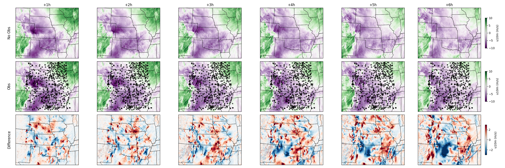
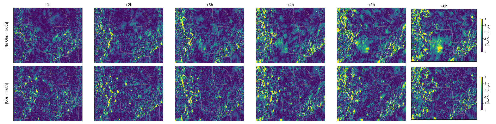

Note
Go to the end to download the full example code.
StormCast Score-Based Data Assimilation#
Running StormCast with guided diffusion posterior sampling to assimilate observations.
This example demonstrates how to use the StormCast score-based data assimilation (SDA) model for convection-allowing regional forecasts that incorporate sparse in-situ observations using diffusion posterior sampling (DPS). Two forecasts are run—one without observations and one with ISD surface station data from central United States region to illustrate the impact of data assimilation.
In this example you will learn:
How to load and initialise the StormCast score-based data assimilation (SDA) model
Fetching HRRR initial conditions and ISD surface observations
Running the model iteratively with and without observation assimilation
Comparing assimilated and non-assimilated forecasts
# /// script
# dependencies = [
# "earth2studio[da-stormcast] @ git+https://github.com/NVIDIA/earth2studio.git",
# "cartopy",
# ]
# ///
Set Up#
This example requires the following components:
Assimilation Model: StormCast SDA
earth2studio.models.da.StormCastSDA.Datasource (state): HRRR analysis
earth2studio.data.HRRR.Datasource (obs): NOAA ISD surface stations
earth2studio.data.ISD.Datasource (conditioning): GFS forecasts
earth2studio.data.GFS_FX(loaded automatically by the model).
StormCast score-based data assimilation (SDA) extends StormCast with diffusion posterior sampling (DPS) guidance, allowing sparse point observations to steer the generative diffusion process.
import os
os.makedirs("outputs", exist_ok=True)
from dotenv import load_dotenv
load_dotenv() # TODO: make common example prep function
from collections import OrderedDict
from datetime import timedelta
import numpy as np
import torch
import xarray as xr
from loguru import logger
from tqdm import tqdm
logger.remove()
logger.add(lambda msg: tqdm.write(msg, end=""), colorize=True)
from earth2studio.data import HRRR, ISD, fetch_data
from earth2studio.models.da import StormCastSDA
from earth2studio.utils.coords import map_coords_xr
package = StormCastSDA.load_default_package()
# Load the model onto the GPU and configure SDA
# sda_std_obs: assumed (normalized) observation noise std (lower = trust obs more)
# sda_gamma: DPS guidance scaling factor (lower = stronger assimilation)
model = StormCastSDA.load_model(package, sda_std_obs=0.1, sda_gamma=1e-4)
model = model.to("cuda:0")
hrrr = HRRR()
Fetch Initial Conditions#
Pull HRRR analysis data for April 3rd 2025, a date that saw a major tornado
outbreak across the central United States, and select the sub-grid that
StormCast expects. The model’s init_coords() describes the required
coordinate system.
init_time = np.array([np.datetime64("2025-04-03T18:00")])
ic = model.init_coords()[0]
x = fetch_data(
hrrr,
time=init_time,
variable=ic["variable"],
lead_time=np.array([np.timedelta64(0, "h")]),
device="cuda:0",
legacy=False,
)
x = map_coords_xr(x, ic)
Fetching HRRR data: 0%| | 0/99 [00:00<?, ?it/s]
2026-03-23 20:46:10.277 | DEBUG | earth2studio.data.hrrr:fetch_array:509 - Fetching HRRR grib file: noaa-hrrr-bdp-pds/hrrr.20250403/conus/hrrr.t18z.wrfnatf00.grib2 376672409-952800
Fetching HRRR data: 0%| | 0/99 [00:00<?, ?it/s]
2026-03-23 20:46:10.297 | DEBUG | earth2studio.data.hrrr:fetch_array:509 - Fetching HRRR grib file: noaa-hrrr-bdp-pds/hrrr.20250403/conus/hrrr.t18z.wrfnatf00.grib2 186549957-927674
Fetching HRRR data: 0%| | 0/99 [00:00<?, ?it/s]
2026-03-23 20:46:10.318 | DEBUG | earth2studio.data.hrrr:fetch_array:509 - Fetching HRRR grib file: noaa-hrrr-bdp-pds/hrrr.20250403/conus/hrrr.t18z.wrfnatf00.grib2 128336947-1004934
Fetching HRRR data: 0%| | 0/99 [00:00<?, ?it/s]
2026-03-23 20:46:10.338 | DEBUG | earth2studio.data.hrrr:fetch_array:509 - Fetching HRRR grib file: noaa-hrrr-bdp-pds/hrrr.20250403/conus/hrrr.t18z.wrfnatf00.grib2 327929760-1370341
Fetching HRRR data: 0%| | 0/99 [00:00<?, ?it/s]
2026-03-23 20:46:10.360 | DEBUG | earth2studio.data.hrrr:fetch_array:509 - Fetching HRRR grib file: noaa-hrrr-bdp-pds/hrrr.20250403/conus/hrrr.t18z.wrfnatf00.grib2 147610238-2217533
Fetching HRRR data: 0%| | 0/99 [00:00<?, ?it/s]
2026-03-23 20:46:10.383 | DEBUG | earth2studio.data.hrrr:fetch_array:509 - Fetching HRRR grib file: noaa-hrrr-bdp-pds/hrrr.20250403/conus/hrrr.t18z.wrfnatf00.grib2 271239409-2213823
Fetching HRRR data: 0%| | 0/99 [00:00<?, ?it/s]
2026-03-23 20:46:10.406 | DEBUG | earth2studio.data.hrrr:fetch_array:509 - Fetching HRRR grib file: noaa-hrrr-bdp-pds/hrrr.20250403/conus/hrrr.t18z.wrfnatf00.grib2 274260674-1117785
Fetching HRRR data: 0%| | 0/99 [00:00<?, ?it/s]
2026-03-23 20:46:10.427 | DEBUG | earth2studio.data.hrrr:fetch_array:509 - Fetching HRRR grib file: noaa-hrrr-bdp-pds/hrrr.20250403/conus/hrrr.t18z.wrfsfcf00.grib2 48030429-2143472
Fetching HRRR data: 0%| | 0/99 [00:00<?, ?it/s]
2026-03-23 20:46:10.438 | DEBUG | earth2studio.data.hrrr:fetch_array:509 - Fetching HRRR grib file: noaa-hrrr-bdp-pds/hrrr.20250403/conus/hrrr.t18z.wrfnatf00.grib2 144404034-1022557
Fetching HRRR data: 0%| | 0/99 [00:00<?, ?it/s]
2026-03-23 20:46:10.459 | DEBUG | earth2studio.data.hrrr:fetch_array:509 - Fetching HRRR grib file: noaa-hrrr-bdp-pds/hrrr.20250403/conus/hrrr.t18z.wrfnatf00.grib2 64897779-1033721
Fetching HRRR data: 0%| | 0/99 [00:00<?, ?it/s]
2026-03-23 20:46:10.480 | DEBUG | earth2studio.data.hrrr:fetch_array:509 - Fetching HRRR grib file: noaa-hrrr-bdp-pds/hrrr.20250403/conus/hrrr.t18z.wrfnatf00.grib2 211954071-1738417
Fetching HRRR data: 0%| | 0/99 [00:00<?, ?it/s]
2026-03-23 20:46:10.502 | DEBUG | earth2studio.data.hrrr:fetch_array:509 - Fetching HRRR grib file: noaa-hrrr-bdp-pds/hrrr.20250403/conus/hrrr.t18z.wrfnatf00.grib2 36581807-1106281
Fetching HRRR data: 0%| | 0/99 [00:00<?, ?it/s]
2026-03-23 20:46:10.523 | DEBUG | earth2studio.data.hrrr:fetch_array:509 - Fetching HRRR grib file: noaa-hrrr-bdp-pds/hrrr.20250403/conus/hrrr.t18z.wrfnatf00.grib2 97206978-1027792
Fetching HRRR data: 0%| | 0/99 [00:00<?, ?it/s]
2026-03-23 20:46:10.552 | DEBUG | earth2studio.data.hrrr:fetch_array:509 - Fetching HRRR grib file: noaa-hrrr-bdp-pds/hrrr.20250403/conus/hrrr.t18z.wrfnatf00.grib2 185347064-1202893
Fetching HRRR data: 0%| | 0/99 [00:00<?, ?it/s]
2026-03-23 20:46:10.574 | DEBUG | earth2studio.data.hrrr:fetch_array:509 - Fetching HRRR grib file: noaa-hrrr-bdp-pds/hrrr.20250403/conus/hrrr.t18z.wrfnatf00.grib2 329300101-798850
Fetching HRRR data: 0%| | 0/99 [00:00<?, ?it/s]
2026-03-23 20:46:10.594 | DEBUG | earth2studio.data.hrrr:fetch_array:509 - Fetching HRRR grib file: noaa-hrrr-bdp-pds/hrrr.20250403/conus/hrrr.t18z.wrfnatf00.grib2 156957221-1338633
Fetching HRRR data: 0%| | 0/99 [00:00<?, ?it/s]
2026-03-23 20:46:10.616 | DEBUG | earth2studio.data.hrrr:fetch_array:509 - Fetching HRRR grib file: noaa-hrrr-bdp-pds/hrrr.20250403/conus/hrrr.t18z.wrfsfcf00.grib2 45648814-2381615
Fetching HRRR data: 0%| | 0/99 [00:00<?, ?it/s]
2026-03-23 20:46:10.628 | DEBUG | earth2studio.data.hrrr:fetch_array:509 - Fetching HRRR grib file: noaa-hrrr-bdp-pds/hrrr.20250403/conus/hrrr.t18z.wrfnatf00.grib2 325421706-1863740
Fetching HRRR data: 0%| | 0/99 [00:00<?, ?it/s]
2026-03-23 20:46:10.649 | DEBUG | earth2studio.data.hrrr:fetch_array:509 - Fetching HRRR grib file: noaa-hrrr-bdp-pds/hrrr.20250403/conus/hrrr.t18z.wrfnatf00.grib2 141940938-1467596
Fetching HRRR data: 0%| | 0/99 [00:00<?, ?it/s]
2026-03-23 20:46:10.671 | DEBUG | earth2studio.data.hrrr:fetch_array:509 - Fetching HRRR grib file: noaa-hrrr-bdp-pds/hrrr.20250403/conus/hrrr.t18z.wrfnatf00.grib2 113681774-1033852
Fetching HRRR data: 0%| | 0/99 [00:00<?, ?it/s]
2026-03-23 20:46:10.692 | DEBUG | earth2studio.data.hrrr:fetch_array:509 - Fetching HRRR grib file: noaa-hrrr-bdp-pds/hrrr.20250403/conus/hrrr.t18z.wrfnatf00.grib2 96223451-983527
Fetching HRRR data: 0%| | 0/99 [00:00<?, ?it/s]
2026-03-23 20:46:10.713 | DEBUG | earth2studio.data.hrrr:fetch_array:509 - Fetching HRRR grib file: noaa-hrrr-bdp-pds/hrrr.20250403/conus/hrrr.t18z.wrfnatf00.grib2 126788986-1547961
Fetching HRRR data: 0%| | 0/99 [00:00<?, ?it/s]
2026-03-23 20:46:10.735 | DEBUG | earth2studio.data.hrrr:fetch_array:509 - Fetching HRRR grib file: noaa-hrrr-bdp-pds/hrrr.20250403/conus/hrrr.t18z.wrfnatf00.grib2 132666044-2246437
Fetching HRRR data: 0%| | 0/99 [00:00<?, ?it/s]
2026-03-23 20:46:10.759 | DEBUG | earth2studio.data.hrrr:fetch_array:509 - Fetching HRRR grib file: noaa-hrrr-bdp-pds/hrrr.20250403/conus/hrrr.t18z.wrfnatf00.grib2 111137367-1545427
Fetching HRRR data: 0%| | 0/99 [00:00<?, ?it/s]
2026-03-23 20:46:10.781 | DEBUG | earth2studio.data.hrrr:fetch_array:509 - Fetching HRRR grib file: noaa-hrrr-bdp-pds/hrrr.20250403/conus/hrrr.t18z.wrfnatf00.grib2 51602163-1061948
Fetching HRRR data: 0%| | 0/99 [00:00<?, ?it/s]
2026-03-23 20:46:10.802 | DEBUG | earth2studio.data.hrrr:fetch_array:509 - Fetching HRRR grib file: noaa-hrrr-bdp-pds/hrrr.20250403/conus/hrrr.t18z.wrfnatf00.grib2 94723515-1499936
Fetching HRRR data: 0%| | 0/99 [00:00<?, ?it/s]
2026-03-23 20:46:10.824 | DEBUG | earth2studio.data.hrrr:fetch_array:509 - Fetching HRRR grib file: noaa-hrrr-bdp-pds/hrrr.20250403/conus/hrrr.t18z.wrfnatf00.grib2 23931930-1079310
Fetching HRRR data: 0%| | 0/99 [00:00<?, ?it/s]
2026-03-23 20:46:10.845 | DEBUG | earth2studio.data.hrrr:fetch_array:509 - Fetching HRRR grib file: noaa-hrrr-bdp-pds/hrrr.20250403/conus/hrrr.t18z.wrfnatf00.grib2 112682794-998980
Fetching HRRR data: 0%| | 0/99 [00:00<?, ?it/s]
2026-03-23 20:46:10.866 | DEBUG | earth2studio.data.hrrr:fetch_array:509 - Fetching HRRR grib file: noaa-hrrr-bdp-pds/hrrr.20250403/conus/hrrr.t18z.wrfnatf00.grib2 78889851-1409831
Fetching HRRR data: 0%| | 0/99 [00:00<?, ?it/s]
2026-03-23 20:46:10.889 | DEBUG | earth2studio.data.hrrr:fetch_array:509 - Fetching HRRR grib file: noaa-hrrr-bdp-pds/hrrr.20250403/conus/hrrr.t18z.wrfnatf00.grib2 81292460-1028923
Fetching HRRR data: 0%| | 0/99 [00:00<?, ?it/s]
2026-03-23 20:46:10.910 | DEBUG | earth2studio.data.hrrr:fetch_array:509 - Fetching HRRR grib file: noaa-hrrr-bdp-pds/hrrr.20250403/conus/hrrr.t18z.wrfnatf00.grib2 63562860-1334919
Fetching HRRR data: 0%| | 0/99 [00:00<?, ?it/s]
2026-03-23 20:46:10.932 | DEBUG | earth2studio.data.hrrr:fetch_array:509 - Fetching HRRR grib file: noaa-hrrr-bdp-pds/hrrr.20250403/conus/hrrr.t18z.wrfnatf00.grib2 158295854-986987
Fetching HRRR data: 0%| | 0/99 [00:00<?, ?it/s]
2026-03-23 20:46:10.952 | DEBUG | earth2studio.data.hrrr:fetch_array:509 - Fetching HRRR grib file: noaa-hrrr-bdp-pds/hrrr.20250403/conus/hrrr.t18z.wrfnatf00.grib2 37688088-1064608
Fetching HRRR data: 0%| | 0/99 [00:00<?, ?it/s]
2026-03-23 20:46:10.973 | DEBUG | earth2studio.data.hrrr:fetch_array:509 - Fetching HRRR grib file: noaa-hrrr-bdp-pds/hrrr.20250403/conus/hrrr.t18z.wrfsfcf00.grib2 38618961-1218502
Fetching HRRR data: 0%| | 0/99 [00:00<?, ?it/s]
2026-03-23 20:46:10.993 | DEBUG | earth2studio.data.hrrr:fetch_array:509 - Fetching HRRR grib file: noaa-hrrr-bdp-pds/hrrr.20250403/conus/hrrr.t18z.wrfnatf00.grib2 49236470-1287730
Fetching HRRR data: 0%| | 0/99 [00:00<?, ?it/s]
2026-03-23 20:46:11.015 | DEBUG | earth2studio.data.hrrr:fetch_array:509 - Fetching HRRR grib file: noaa-hrrr-bdp-pds/hrrr.20250403/conus/hrrr.t18z.wrfnatf00.grib2 65931500-1041731
Fetching HRRR data: 0%| | 0/99 [00:00<?, ?it/s]
2026-03-23 20:46:11.036 | DEBUG | earth2studio.data.hrrr:fetch_array:509 - Fetching HRRR grib file: noaa-hrrr-bdp-pds/hrrr.20250403/conus/hrrr.t18z.wrfnatf00.grib2 35296079-1285728
Fetching HRRR data: 0%| | 0/99 [00:00<?, ?it/s]
2026-03-23 20:46:11.057 | DEBUG | earth2studio.data.hrrr:fetch_array:509 - Fetching HRRR grib file: noaa-hrrr-bdp-pds/hrrr.20250403/conus/hrrr.t18z.wrfnatf00.grib2 143408534-995500
Fetching HRRR data: 0%| | 0/99 [00:00<?, ?it/s]
2026-03-23 20:46:11.077 | DEBUG | earth2studio.data.hrrr:fetch_array:509 - Fetching HRRR grib file: noaa-hrrr-bdp-pds/hrrr.20250403/conus/hrrr.t18z.wrfnatf00.grib2 10315988-1087681
Fetching HRRR data: 0%| | 0/99 [00:00<?, ?it/s]
2026-03-23 20:46:11.098 | DEBUG | earth2studio.data.hrrr:fetch_array:509 - Fetching HRRR grib file: noaa-hrrr-bdp-pds/hrrr.20250403/conus/hrrr.t18z.wrfnatf00.grib2 21513119-1298684
Fetching HRRR data: 0%| | 0/99 [00:00<?, ?it/s]
2026-03-23 20:46:11.120 | DEBUG | earth2studio.data.hrrr:fetch_array:509 - Fetching HRRR grib file: noaa-hrrr-bdp-pds/hrrr.20250403/conus/hrrr.t18z.wrfnatf00.grib2 213692488-878330
Fetching HRRR data: 0%| | 0/99 [00:00<?, ?it/s]
2026-03-23 20:46:11.140 | DEBUG | earth2studio.data.hrrr:fetch_array:509 - Fetching HRRR grib file: noaa-hrrr-bdp-pds/hrrr.20250403/conus/hrrr.t18z.wrfnatf00.grib2 275378459-808969
Fetching HRRR data: 0%| | 0/99 [00:00<?, ?it/s]
2026-03-23 20:46:11.159 | DEBUG | earth2studio.data.hrrr:fetch_array:509 - Fetching HRRR grib file: noaa-hrrr-bdp-pds/hrrr.20250403/conus/hrrr.t18z.wrfnatf00.grib2 7859070-1335201
Fetching HRRR data: 0%| | 0/99 [00:00<?, ?it/s]
2026-03-23 20:46:11.181 | DEBUG | earth2studio.data.hrrr:fetch_array:509 - Fetching HRRR grib file: noaa-hrrr-bdp-pds/hrrr.20250403/conus/hrrr.t18z.wrfnatf00.grib2 22811803-1120127
Fetching HRRR data: 0%| | 0/99 [00:00<?, ?it/s]
2026-03-23 20:46:11.202 | DEBUG | earth2studio.data.hrrr:fetch_array:509 - Fetching HRRR grib file: noaa-hrrr-bdp-pds/hrrr.20250403/conus/hrrr.t18z.wrfnatf00.grib2 377625209-812148
Fetching HRRR data: 0%| | 0/99 [00:00<?, ?it/s]
2026-03-23 20:46:11.221 | DEBUG | earth2studio.data.hrrr:fetch_array:509 - Fetching HRRR grib file: noaa-hrrr-bdp-pds/hrrr.20250403/conus/hrrr.t18z.wrfnatf00.grib2 376067102-605307
Fetching HRRR data: 0%| | 0/99 [00:00<?, ?it/s]
2026-03-23 20:46:11.240 | DEBUG | earth2studio.data.hrrr:fetch_array:509 - Fetching HRRR grib file: noaa-hrrr-bdp-pds/hrrr.20250403/conus/hrrr.t18z.wrfnatf00.grib2 129341881-1034813
Fetching HRRR data: 0%| | 0/99 [00:00<?, ?it/s]
2026-03-23 20:46:11.260 | DEBUG | earth2studio.data.hrrr:fetch_array:509 - Fetching HRRR grib file: noaa-hrrr-bdp-pds/hrrr.20250403/conus/hrrr.t18z.wrfnatf00.grib2 327285446-644314
Fetching HRRR data: 0%| | 0/99 [00:00<?, ?it/s]
2026-03-23 20:46:11.279 | DEBUG | earth2studio.data.hrrr:fetch_array:509 - Fetching HRRR grib file: noaa-hrrr-bdp-pds/hrrr.20250403/conus/hrrr.t18z.wrfnatf00.grib2 0-2225035
Fetching HRRR data: 0%| | 0/99 [00:01<?, ?it/s]
2026-03-23 20:46:11.301 | DEBUG | earth2studio.data.hrrr:fetch_array:509 - Fetching HRRR grib file: noaa-hrrr-bdp-pds/hrrr.20250403/conus/hrrr.t18z.wrfnatf00.grib2 273453232-807442
Fetching HRRR data: 0%| | 0/99 [00:01<?, ?it/s]
2026-03-23 20:46:11.321 | DEBUG | earth2studio.data.hrrr:fetch_array:509 - Fetching HRRR grib file: noaa-hrrr-bdp-pds/hrrr.20250403/conus/hrrr.t18z.wrfsfcf00.grib2 0-490507
Fetching HRRR data: 0%| | 0/99 [00:01<?, ?it/s]
2026-03-23 20:46:11.339 | DEBUG | earth2studio.data.hrrr:fetch_array:509 - Fetching HRRR grib file: noaa-hrrr-bdp-pds/hrrr.20250403/conus/hrrr.t18z.wrfnatf00.grib2 13579156-2224217
Fetching HRRR data: 0%| | 0/99 [00:01<?, ?it/s]
2026-03-23 20:46:11.364 | DEBUG | earth2studio.data.hrrr:fetch_array:509 - Fetching HRRR grib file: noaa-hrrr-bdp-pds/hrrr.20250403/conus/hrrr.t18z.wrfnatf00.grib2 211005575-948496
Fetching HRRR data: 0%| | 0/99 [00:01<?, ?it/s]
2026-03-23 20:46:11.384 | DEBUG | earth2studio.data.hrrr:fetch_array:509 - Fetching HRRR grib file: noaa-hrrr-bdp-pds/hrrr.20250403/conus/hrrr.t18z.wrfsfcf00.grib2 26478875-626732
Fetching HRRR data: 0%| | 0/99 [00:01<?, ?it/s]
2026-03-23 20:46:11.403 | DEBUG | earth2studio.data.hrrr:fetch_array:509 - Fetching HRRR grib file: noaa-hrrr-bdp-pds/hrrr.20250403/conus/hrrr.t18z.wrfnatf00.grib2 374624994-1442108
Fetching HRRR data: 0%| | 0/99 [00:01<?, ?it/s]
2026-03-23 20:46:11.425 | DEBUG | earth2studio.data.hrrr:fetch_array:509 - Fetching HRRR grib file: noaa-hrrr-bdp-pds/hrrr.20250403/conus/hrrr.t18z.wrfnatf00.grib2 184367326-979738
Fetching HRRR data: 0%| | 0/99 [00:01<?, ?it/s]
2026-03-23 20:46:11.446 | DEBUG | earth2studio.data.hrrr:fetch_array:509 - Fetching HRRR grib file: noaa-hrrr-bdp-pds/hrrr.20250403/conus/hrrr.t18z.wrfnatf00.grib2 27312673-2223782
Fetching HRRR data: 0%| | 0/99 [00:01<?, ?it/s]
2026-03-23 20:46:11.469 | DEBUG | earth2studio.data.hrrr:fetch_array:509 - Fetching HRRR grib file: noaa-hrrr-bdp-pds/hrrr.20250403/conus/hrrr.t18z.wrfnatf00.grib2 155942570-1014651
Fetching HRRR data: 0%| | 0/99 [00:01<?, ?it/s]
2026-03-23 20:46:11.490 | DEBUG | earth2studio.data.hrrr:fetch_array:509 - Fetching HRRR grib file: noaa-hrrr-bdp-pds/hrrr.20250403/conus/hrrr.t18z.wrfnatf00.grib2 41043087-2224129
Fetching HRRR data: 0%| | 0/99 [00:01<?, ?it/s]
2026-03-23 20:46:11.513 | DEBUG | earth2studio.data.hrrr:fetch_array:509 - Fetching HRRR grib file: noaa-hrrr-bdp-pds/hrrr.20250403/conus/hrrr.t18z.wrfnatf00.grib2 140876211-1064727
Fetching HRRR data: 0%| | 0/99 [00:01<?, ?it/s]
2026-03-23 20:46:11.534 | DEBUG | earth2studio.data.hrrr:fetch_array:509 - Fetching HRRR grib file: noaa-hrrr-bdp-pds/hrrr.20250403/conus/hrrr.t18z.wrfnatf00.grib2 55087467-2224802
Fetching HRRR data: 0%| | 0/99 [00:01<?, ?it/s]
2026-03-23 20:46:11.557 | DEBUG | earth2studio.data.hrrr:fetch_array:509 - Fetching HRRR grib file: noaa-hrrr-bdp-pds/hrrr.20250403/conus/hrrr.t18z.wrfnatf00.grib2 125688724-1100262
Fetching HRRR data: 0%| | 0/99 [00:01<?, ?it/s]
2026-03-23 20:46:11.578 | DEBUG | earth2studio.data.hrrr:fetch_array:509 - Fetching HRRR grib file: noaa-hrrr-bdp-pds/hrrr.20250403/conus/hrrr.t18z.wrfnatf00.grib2 69439889-2228285
Fetching HRRR data: 0%| | 0/99 [00:01<?, ?it/s]
2026-03-23 20:46:11.600 | DEBUG | earth2studio.data.hrrr:fetch_array:509 - Fetching HRRR grib file: noaa-hrrr-bdp-pds/hrrr.20250403/conus/hrrr.t18z.wrfnatf00.grib2 80299682-992778
Fetching HRRR data: 0%| | 0/99 [00:01<?, ?it/s]
2026-03-23 20:46:11.621 | DEBUG | earth2studio.data.hrrr:fetch_array:509 - Fetching HRRR grib file: noaa-hrrr-bdp-pds/hrrr.20250403/conus/hrrr.t18z.wrfnatf00.grib2 110028466-1108901
Fetching HRRR data: 0%| | 0/99 [00:01<?, ?it/s]
2026-03-23 20:46:11.642 | DEBUG | earth2studio.data.hrrr:fetch_array:509 - Fetching HRRR grib file: noaa-hrrr-bdp-pds/hrrr.20250403/conus/hrrr.t18z.wrfnatf00.grib2 84804250-2232889
Fetching HRRR data: 0%| | 0/99 [00:01<?, ?it/s]
2026-03-23 20:46:11.665 | DEBUG | earth2studio.data.hrrr:fetch_array:509 - Fetching HRRR grib file: noaa-hrrr-bdp-pds/hrrr.20250403/conus/hrrr.t18z.wrfnatf00.grib2 93620870-1102645
Fetching HRRR data: 0%| | 0/99 [00:01<?, ?it/s]
2026-03-23 20:46:11.686 | DEBUG | earth2studio.data.hrrr:fetch_array:509 - Fetching HRRR grib file: noaa-hrrr-bdp-pds/hrrr.20250403/conus/hrrr.t18z.wrfnatf00.grib2 100760365-2240542
Fetching HRRR data: 0%| | 0/99 [00:01<?, ?it/s]
2026-03-23 20:46:11.709 | DEBUG | earth2studio.data.hrrr:fetch_array:509 - Fetching HRRR grib file: noaa-hrrr-bdp-pds/hrrr.20250403/conus/hrrr.t18z.wrfnatf00.grib2 77801023-1088828
Fetching HRRR data: 0%| | 0/99 [00:01<?, ?it/s]
2026-03-23 20:46:11.730 | DEBUG | earth2studio.data.hrrr:fetch_array:509 - Fetching HRRR grib file: noaa-hrrr-bdp-pds/hrrr.20250403/conus/hrrr.t18z.wrfnatf00.grib2 116930812-2245430
Fetching HRRR data: 0%| | 0/99 [00:01<?, ?it/s]
2026-03-23 20:46:11.753 | DEBUG | earth2studio.data.hrrr:fetch_array:509 - Fetching HRRR grib file: noaa-hrrr-bdp-pds/hrrr.20250403/conus/hrrr.t18z.wrfnatf00.grib2 208527465-2478110
Fetching HRRR data: 0%| | 0/99 [00:01<?, ?it/s]
2026-03-23 20:46:11.775 | DEBUG | earth2studio.data.hrrr:fetch_array:509 - Fetching HRRR grib file: noaa-hrrr-bdp-pds/hrrr.20250403/conus/hrrr.t18z.wrfnatf00.grib2 62478631-1084229
Fetching HRRR data: 0%| | 0/99 [00:01<?, ?it/s]
2026-03-23 20:46:11.796 | DEBUG | earth2studio.data.hrrr:fetch_array:509 - Fetching HRRR grib file: noaa-hrrr-bdp-pds/hrrr.20250403/conus/hrrr.t18z.wrfnatf00.grib2 181850165-2517161
Fetching HRRR data: 0%| | 0/99 [00:01<?, ?it/s]
2026-03-23 20:46:11.820 | DEBUG | earth2studio.data.hrrr:fetch_array:509 - Fetching HRRR grib file: noaa-hrrr-bdp-pds/hrrr.20250403/conus/hrrr.t18z.wrfnatf00.grib2 48147386-1089084
Fetching HRRR data: 0%| | 0/99 [00:01<?, ?it/s]
2026-03-23 20:46:11.840 | DEBUG | earth2studio.data.hrrr:fetch_array:509 - Fetching HRRR grib file: noaa-hrrr-bdp-pds/hrrr.20250403/conus/hrrr.t18z.wrfnatf00.grib2 153409835-2532735
Fetching HRRR data: 0%| | 0/99 [00:01<?, ?it/s]
2026-03-23 20:46:11.864 | DEBUG | earth2studio.data.hrrr:fetch_array:509 - Fetching HRRR grib file: noaa-hrrr-bdp-pds/hrrr.20250403/conus/hrrr.t18z.wrfnatf00.grib2 34195365-1100714
Fetching HRRR data: 0%| | 0/99 [00:01<?, ?it/s]
2026-03-23 20:46:11.885 | DEBUG | earth2studio.data.hrrr:fetch_array:509 - Fetching HRRR grib file: noaa-hrrr-bdp-pds/hrrr.20250403/conus/hrrr.t18z.wrfnatf00.grib2 138348471-2527740
Fetching HRRR data: 0%| | 0/99 [00:01<?, ?it/s]
2026-03-23 20:46:11.908 | DEBUG | earth2studio.data.hrrr:fetch_array:509 - Fetching HRRR grib file: noaa-hrrr-bdp-pds/hrrr.20250403/conus/hrrr.t18z.wrfnatf00.grib2 20400394-1112725
Fetching HRRR data: 0%| | 0/99 [00:01<?, ?it/s]
2026-03-23 20:46:11.929 | DEBUG | earth2studio.data.hrrr:fetch_array:509 - Fetching HRRR grib file: noaa-hrrr-bdp-pds/hrrr.20250403/conus/hrrr.t18z.wrfnatf00.grib2 123175209-2513515
Fetching HRRR data: 0%| | 0/99 [00:01<?, ?it/s]
2026-03-23 20:46:11.952 | DEBUG | earth2studio.data.hrrr:fetch_array:509 - Fetching HRRR grib file: noaa-hrrr-bdp-pds/hrrr.20250403/conus/hrrr.t18z.wrfnatf00.grib2 50524200-1077963
Fetching HRRR data: 0%| | 0/99 [00:01<?, ?it/s]
2026-03-23 20:46:11.974 | DEBUG | earth2studio.data.hrrr:fetch_array:509 - Fetching HRRR grib file: noaa-hrrr-bdp-pds/hrrr.20250403/conus/hrrr.t18z.wrfnatf00.grib2 6703795-1155275
Fetching HRRR data: 0%| | 0/99 [00:01<?, ?it/s]
2026-03-23 20:46:11.994 | DEBUG | earth2studio.data.hrrr:fetch_array:509 - Fetching HRRR grib file: noaa-hrrr-bdp-pds/hrrr.20250403/conus/hrrr.t18z.wrfnatf00.grib2 267107979-2260788
Fetching HRRR data: 0%| | 0/99 [00:01<?, ?it/s]
2026-03-23 20:46:12.017 | DEBUG | earth2studio.data.hrrr:fetch_array:509 - Fetching HRRR grib file: noaa-hrrr-bdp-pds/hrrr.20250403/conus/hrrr.t18z.wrfnatf00.grib2 107535933-2492533
Fetching HRRR data: 0%| | 0/99 [00:01<?, ?it/s]
2026-03-23 20:46:12.041 | DEBUG | earth2studio.data.hrrr:fetch_array:509 - Fetching HRRR grib file: noaa-hrrr-bdp-pds/hrrr.20250403/conus/hrrr.t18z.wrfnatf00.grib2 378437357-816755
Fetching HRRR data: 0%| | 0/99 [00:01<?, ?it/s]
2026-03-23 20:46:12.061 | DEBUG | earth2studio.data.hrrr:fetch_array:509 - Fetching HRRR grib file: noaa-hrrr-bdp-pds/hrrr.20250403/conus/hrrr.t18z.wrfnatf00.grib2 18039616-2360778
Fetching HRRR data: 0%| | 0/99 [00:01<?, ?it/s]
2026-03-23 20:46:12.085 | DEBUG | earth2studio.data.hrrr:fetch_array:509 - Fetching HRRR grib file: noaa-hrrr-bdp-pds/hrrr.20250403/conus/hrrr.t18z.wrfnatf00.grib2 330098951-808033
Fetching HRRR data: 0%| | 0/99 [00:01<?, ?it/s]
2026-03-23 20:46:12.105 | DEBUG | earth2studio.data.hrrr:fetch_array:509 - Fetching HRRR grib file: noaa-hrrr-bdp-pds/hrrr.20250403/conus/hrrr.t18z.wrfnatf00.grib2 91153766-2467104
Fetching HRRR data: 0%| | 0/99 [00:01<?, ?it/s]
2026-03-23 20:46:12.129 | DEBUG | earth2studio.data.hrrr:fetch_array:509 - Fetching HRRR grib file: noaa-hrrr-bdp-pds/hrrr.20250403/conus/hrrr.t18z.wrfnatf00.grib2 9194271-1121717
Fetching HRRR data: 0%| | 0/99 [00:01<?, ?it/s]
2026-03-23 20:46:12.150 | DEBUG | earth2studio.data.hrrr:fetch_array:509 - Fetching HRRR grib file: noaa-hrrr-bdp-pds/hrrr.20250403/conus/hrrr.t18z.wrfnatf00.grib2 276187428-831885
Fetching HRRR data: 0%| | 0/99 [00:01<?, ?it/s]
2026-03-23 20:46:12.169 | DEBUG | earth2studio.data.hrrr:fetch_array:509 - Fetching HRRR grib file: noaa-hrrr-bdp-pds/hrrr.20250403/conus/hrrr.t18z.wrfnatf00.grib2 75360973-2440050
Fetching HRRR data: 0%| | 0/99 [00:01<?, ?it/s]
2026-03-23 20:46:12.193 | DEBUG | earth2studio.data.hrrr:fetch_array:509 - Fetching HRRR grib file: noaa-hrrr-bdp-pds/hrrr.20250403/conus/hrrr.t18z.wrfnatf00.grib2 214570818-897239
Fetching HRRR data: 0%| | 0/99 [00:01<?, ?it/s]
2026-03-23 20:46:12.213 | DEBUG | earth2studio.data.hrrr:fetch_array:509 - Fetching HRRR grib file: noaa-hrrr-bdp-pds/hrrr.20250403/conus/hrrr.t18z.wrfnatf00.grib2 176625770-2151602
Fetching HRRR data: 0%| | 0/99 [00:01<?, ?it/s]
2026-03-23 20:46:12.235 | DEBUG | earth2studio.data.hrrr:fetch_array:509 - Fetching HRRR grib file: noaa-hrrr-bdp-pds/hrrr.20250403/conus/hrrr.t18z.wrfnatf00.grib2 60069501-2409130
Fetching HRRR data: 0%| | 0/99 [00:01<?, ?it/s]
2026-03-23 20:46:12.257 | DEBUG | earth2studio.data.hrrr:fetch_array:509 - Fetching HRRR grib file: noaa-hrrr-bdp-pds/hrrr.20250403/conus/hrrr.t18z.wrfnatf00.grib2 187477631-949111
Fetching HRRR data: 0%| | 0/99 [00:01<?, ?it/s]
2026-03-23 20:46:12.278 | DEBUG | earth2studio.data.hrrr:fetch_array:509 - Fetching HRRR grib file: noaa-hrrr-bdp-pds/hrrr.20250403/conus/hrrr.t18z.wrfnatf00.grib2 45764752-2382634
Fetching HRRR data: 0%| | 0/99 [00:02<?, ?it/s]
2026-03-23 20:46:12.301 | DEBUG | earth2studio.data.hrrr:fetch_array:509 - Fetching HRRR grib file: noaa-hrrr-bdp-pds/hrrr.20250403/conus/hrrr.t18z.wrfnatf00.grib2 159282841-1002810
Fetching HRRR data: 0%| | 0/99 [00:02<?, ?it/s]
2026-03-23 20:46:12.322 | DEBUG | earth2studio.data.hrrr:fetch_array:509 - Fetching HRRR grib file: noaa-hrrr-bdp-pds/hrrr.20250403/conus/hrrr.t18z.wrfnatf00.grib2 203571334-2321626
Fetching HRRR data: 0%| | 0/99 [00:02<?, ?it/s]
2026-03-23 20:46:12.344 | DEBUG | earth2studio.data.hrrr:fetch_array:509 - Fetching HRRR grib file: noaa-hrrr-bdp-pds/hrrr.20250403/conus/hrrr.t18z.wrfnatf00.grib2 31824235-2371130
Fetching HRRR data: 0%| | 0/99 [00:02<?, ?it/s]
2026-03-23 20:46:12.368 | DEBUG | earth2studio.data.hrrr:fetch_array:509 - Fetching HRRR grib file: noaa-hrrr-bdp-pds/hrrr.20250403/conus/hrrr.t18z.wrfnatf00.grib2 4429817-2273978
Fetching HRRR data: 0%| | 0/99 [00:02<?, ?it/s]
Fetching HRRR data: 1%| | 1/99 [00:02<03:27, 2.11s/it]
Fetching HRRR data: 100%|██████████| 99/99 [00:02<00:00, 46.82it/s]
Run Without Observations#
Step the model forward 6 hours without any observations. This is equivalent to using
the StormCast prognostic model as it will just use EDM diffusion sampling under the
hood. Each call to model.send(None) advances the state by one hour.
We store only the surface variables used for comparison (u10m, v10m, t2m).
nsteps = 6
plot_vars = ["u10m", "v10m", "t2m"]
np.random.seed(42)
torch.manual_seed(42)
if torch.cuda.is_available():
torch.cuda.manual_seed_all(42)
no_obs_frames = []
gen = model.create_generator(x.copy())
x_state = next(gen) # Prime the generator, yields initial state
for step in tqdm(range(nsteps), desc="No-obs forecast"):
logger.info(f"Running no-obs forecast step {step}")
x_state = gen.send(None) # Advance one hour without observations
no_obs_frames.append(x_state.sel(variable=plot_vars).copy())
gen.close()
no_obs_da = xr.concat(no_obs_frames, dim="lead_time")
# Save to Zarr (convert to numpy for storage)
no_obs_np = no_obs_da.copy(data=no_obs_da.data.get())
no_obs_np.to_dataset(name="prediction").to_zarr("outputs/21_no_obs.zarr", mode="w")
No-obs forecast: 0%| | 0/6 [00:00<?, ?it/s]
2026-03-23 20:46:13.959 | INFO | __main__:<module>:136 - Running no-obs forecast step 0
No-obs forecast: 0%| | 0/6 [00:00<?, ?it/s]
2026-03-23 20:46:14.031 | DEBUG | earth2studio.data.gfs:fetch_array:386 - Fetching GFS grib file: noaa-gfs-bdp-pds/gfs.20250403/18/atmos/gfs.t18z.pgrb2.0p25.f000 432613467-1186628
No-obs forecast: 0%| | 0/6 [00:00<?, ?it/s]
2026-03-23 20:46:14.047 | DEBUG | earth2studio.data.gfs:fetch_array:386 - Fetching GFS grib file: noaa-gfs-bdp-pds/gfs.20250403/18/atmos/gfs.t18z.pgrb2.0p25.f000 215814806-607115
No-obs forecast: 0%| | 0/6 [00:00<?, ?it/s]
2026-03-23 20:46:14.062 | DEBUG | earth2studio.data.gfs:fetch_array:386 - Fetching GFS grib file: noaa-gfs-bdp-pds/gfs.20250403/18/atmos/gfs.t18z.pgrb2.0p25.f000 344553075-1229132
No-obs forecast: 0%| | 0/6 [00:00<?, ?it/s]
2026-03-23 20:46:14.078 | DEBUG | earth2studio.data.gfs:fetch_array:386 - Fetching GFS grib file: noaa-gfs-bdp-pds/gfs.20250403/18/atmos/gfs.t18z.pgrb2.0p25.f000 412859325-843259
No-obs forecast: 0%| | 0/6 [00:00<?, ?it/s]
2026-03-23 20:46:14.091 | DEBUG | earth2studio.data.gfs:fetch_array:386 - Fetching GFS grib file: noaa-gfs-bdp-pds/gfs.20250403/18/atmos/gfs.t18z.pgrb2.0p25.f000 410768545-970897
No-obs forecast: 0%| | 0/6 [00:00<?, ?it/s]
2026-03-23 20:46:14.105 | DEBUG | earth2studio.data.gfs:fetch_array:386 - Fetching GFS grib file: noaa-gfs-bdp-pds/gfs.20250403/18/atmos/gfs.t18z.pgrb2.0p25.f000 265713090-1275320
No-obs forecast: 0%| | 0/6 [00:00<?, ?it/s]
2026-03-23 20:46:14.119 | DEBUG | earth2studio.data.gfs:fetch_array:386 - Fetching GFS grib file: noaa-gfs-bdp-pds/gfs.20250403/18/atmos/gfs.t18z.pgrb2.0p25.f000 0-891656
No-obs forecast: 0%| | 0/6 [00:00<?, ?it/s]
2026-03-23 20:46:14.133 | DEBUG | earth2studio.data.gfs:fetch_array:386 - Fetching GFS grib file: noaa-gfs-bdp-pds/gfs.20250403/18/atmos/gfs.t18z.pgrb2.0p25.f000 424798155-975072
No-obs forecast: 0%| | 0/6 [00:00<?, ?it/s]
2026-03-23 20:46:14.149 | DEBUG | earth2studio.data.gfs:fetch_array:386 - Fetching GFS grib file: noaa-gfs-bdp-pds/gfs.20250403/18/atmos/gfs.t18z.pgrb2.0p25.f000 341454303-876067
No-obs forecast: 0%| | 0/6 [00:00<?, ?it/s]
2026-03-23 20:46:14.164 | DEBUG | earth2studio.data.gfs:fetch_array:386 - Fetching GFS grib file: noaa-gfs-bdp-pds/gfs.20250403/18/atmos/gfs.t18z.pgrb2.0p25.f000 211841986-1183096
No-obs forecast: 0%| | 0/6 [00:00<?, ?it/s]
2026-03-23 20:46:14.178 | DEBUG | earth2studio.data.gfs:fetch_array:386 - Fetching GFS grib file: noaa-gfs-bdp-pds/gfs.20250403/18/atmos/gfs.t18z.pgrb2.0p25.f000 405375720-975181
No-obs forecast: 0%| | 0/6 [00:00<?, ?it/s]
2026-03-23 20:46:14.193 | DEBUG | earth2studio.data.gfs:fetch_array:386 - Fetching GFS grib file: noaa-gfs-bdp-pds/gfs.20250403/18/atmos/gfs.t18z.pgrb2.0p25.f000 262898594-824848
No-obs forecast: 0%| | 0/6 [00:00<?, ?it/s]
2026-03-23 20:46:14.208 | DEBUG | earth2studio.data.gfs:fetch_array:386 - Fetching GFS grib file: noaa-gfs-bdp-pds/gfs.20250403/18/atmos/gfs.t18z.pgrb2.0p25.f000 348196694-951916
No-obs forecast: 0%| | 0/6 [00:00<?, ?it/s]
2026-03-23 20:46:14.223 | DEBUG | earth2studio.data.gfs:fetch_array:386 - Fetching GFS grib file: noaa-gfs-bdp-pds/gfs.20250403/18/atmos/gfs.t18z.pgrb2.0p25.f000 209091106-749499
No-obs forecast: 0%| | 0/6 [00:00<?, ?it/s]
2026-03-23 20:46:14.237 | DEBUG | earth2studio.data.gfs:fetch_array:386 - Fetching GFS grib file: noaa-gfs-bdp-pds/gfs.20250403/18/atmos/gfs.t18z.pgrb2.0p25.f000 269362686-976360
No-obs forecast: 0%| | 0/6 [00:00<?, ?it/s]
2026-03-23 20:46:14.251 | DEBUG | earth2studio.data.gfs:fetch_array:386 - Fetching GFS grib file: noaa-gfs-bdp-pds/gfs.20250403/18/atmos/gfs.t18z.pgrb2.0p25.f000 400362868-868143
No-obs forecast: 0%| | 0/6 [00:00<?, ?it/s]
2026-03-23 20:46:14.266 | DEBUG | earth2studio.data.gfs:fetch_array:386 - Fetching GFS grib file: noaa-gfs-bdp-pds/gfs.20250403/18/atmos/gfs.t18z.pgrb2.0p25.f000 215213068-601738
No-obs forecast: 0%| | 0/6 [00:00<?, ?it/s]
2026-03-23 20:46:14.280 | DEBUG | earth2studio.data.gfs:fetch_array:386 - Fetching GFS grib file: noaa-gfs-bdp-pds/gfs.20250403/18/atmos/gfs.t18z.pgrb2.0p25.f000 425773227-952050
No-obs forecast: 0%| | 0/6 [00:00<?, ?it/s]
2026-03-23 20:46:14.294 | DEBUG | earth2studio.data.gfs:fetch_array:386 - Fetching GFS grib file: noaa-gfs-bdp-pds/gfs.20250403/18/atmos/gfs.t18z.pgrb2.0p25.f000 342330370-856976
No-obs forecast: 0%| | 0/6 [00:00<?, ?it/s]
2026-03-23 20:46:14.308 | DEBUG | earth2studio.data.gfs:fetch_array:386 - Fetching GFS grib file: noaa-gfs-bdp-pds/gfs.20250403/18/atmos/gfs.t18z.pgrb2.0p25.f000 406350901-959941
No-obs forecast: 0%| | 0/6 [00:00<?, ?it/s]
2026-03-23 20:46:14.322 | DEBUG | earth2studio.data.gfs:fetch_array:386 - Fetching GFS grib file: noaa-gfs-bdp-pds/gfs.20250403/18/atmos/gfs.t18z.pgrb2.0p25.f000 263723442-737812
No-obs forecast: 0%| | 0/6 [00:00<?, ?it/s]
2026-03-23 20:46:14.336 | DEBUG | earth2studio.data.gfs:fetch_array:386 - Fetching GFS grib file: noaa-gfs-bdp-pds/gfs.20250403/18/atmos/gfs.t18z.pgrb2.0p25.f000 349148610-961592
No-obs forecast: 0%| | 0/6 [00:00<?, ?it/s]
2026-03-23 20:46:14.351 | DEBUG | earth2studio.data.gfs:fetch_array:386 - Fetching GFS grib file: noaa-gfs-bdp-pds/gfs.20250403/18/atmos/gfs.t18z.pgrb2.0p25.f000 421199976-515876
No-obs forecast: 0%| | 0/6 [00:00<?, ?it/s]
2026-03-23 20:46:14.364 | DEBUG | earth2studio.data.gfs:fetch_array:386 - Fetching GFS grib file: noaa-gfs-bdp-pds/gfs.20250403/18/atmos/gfs.t18z.pgrb2.0p25.f000 209840605-762808
No-obs forecast: 0%| | 0/6 [00:00<?, ?it/s]
2026-03-23 20:46:14.378 | DEBUG | earth2studio.data.gfs:fetch_array:386 - Fetching GFS grib file: noaa-gfs-bdp-pds/gfs.20250403/18/atmos/gfs.t18z.pgrb2.0p25.f000 270339046-939037
No-obs forecast: 0%| | 0/6 [00:00<?, ?it/s]
2026-03-23 20:46:14.392 | DEBUG | earth2studio.data.gfs:fetch_array:386 - Fetching GFS grib file: noaa-gfs-bdp-pds/gfs.20250403/18/atmos/gfs.t18z.pgrb2.0p25.f000 402246545-1220042
No-obs forecast: 0%| | 0/6 [00:00<?, ?it/s]
No-obs forecast: 17%|█▋ | 1/6 [00:20<01:43, 20.66s/it]
2026-03-23 20:46:34.617 | INFO | __main__:<module>:136 - Running no-obs forecast step 1
No-obs forecast: 17%|█▋ | 1/6 [00:20<01:43, 20.66s/it]
2026-03-23 20:46:34.670 | DEBUG | earth2studio.data.gfs:fetch_array:386 - Fetching GFS grib file: noaa-gfs-bdp-pds/gfs.20250403/18/atmos/gfs.t18z.pgrb2.0p25.f001 404104539-974283
No-obs forecast: 17%|█▋ | 1/6 [00:20<01:43, 20.66s/it]
2026-03-23 20:46:34.682 | DEBUG | earth2studio.data.gfs:fetch_array:386 - Fetching GFS grib file: noaa-gfs-bdp-pds/gfs.20250403/18/atmos/gfs.t18z.pgrb2.0p25.f001 409505434-970333
No-obs forecast: 17%|█▋ | 1/6 [00:20<01:43, 20.66s/it]
2026-03-23 20:46:34.694 | DEBUG | earth2studio.data.gfs:fetch_array:386 - Fetching GFS grib file: noaa-gfs-bdp-pds/gfs.20250403/18/atmos/gfs.t18z.pgrb2.0p25.f001 265540242-1275145
No-obs forecast: 17%|█▋ | 1/6 [00:20<01:43, 20.66s/it]
2026-03-23 20:46:34.706 | DEBUG | earth2studio.data.gfs:fetch_array:386 - Fetching GFS grib file: noaa-gfs-bdp-pds/gfs.20250403/18/atmos/gfs.t18z.pgrb2.0p25.f001 340227328-876052
No-obs forecast: 17%|█▋ | 1/6 [00:20<01:43, 20.66s/it]
2026-03-23 20:46:34.718 | DEBUG | earth2studio.data.gfs:fetch_array:386 - Fetching GFS grib file: noaa-gfs-bdp-pds/gfs.20250403/18/atmos/gfs.t18z.pgrb2.0p25.f001 212655581-1183018
No-obs forecast: 17%|█▋ | 1/6 [00:20<01:43, 20.66s/it]
2026-03-23 20:46:34.729 | DEBUG | earth2studio.data.gfs:fetch_array:386 - Fetching GFS grib file: noaa-gfs-bdp-pds/gfs.20250403/18/atmos/gfs.t18z.pgrb2.0p25.f001 346973032-951226
No-obs forecast: 17%|█▋ | 1/6 [00:20<01:43, 20.66s/it]
2026-03-23 20:46:34.741 | DEBUG | earth2studio.data.gfs:fetch_array:386 - Fetching GFS grib file: noaa-gfs-bdp-pds/gfs.20250403/18/atmos/gfs.t18z.pgrb2.0p25.f001 262724062-824626
No-obs forecast: 17%|█▋ | 1/6 [00:20<01:43, 20.66s/it]
2026-03-23 20:46:34.752 | DEBUG | earth2studio.data.gfs:fetch_array:386 - Fetching GFS grib file: noaa-gfs-bdp-pds/gfs.20250403/18/atmos/gfs.t18z.pgrb2.0p25.f001 420650339-514863
No-obs forecast: 17%|█▋ | 1/6 [00:20<01:43, 20.66s/it]
2026-03-23 20:46:34.763 | DEBUG | earth2studio.data.gfs:fetch_array:386 - Fetching GFS grib file: noaa-gfs-bdp-pds/gfs.20250403/18/atmos/gfs.t18z.pgrb2.0p25.f001 269070543-563343
No-obs forecast: 17%|█▋ | 1/6 [00:20<01:43, 20.66s/it]
2026-03-23 20:46:34.774 | DEBUG | earth2studio.data.gfs:fetch_array:386 - Fetching GFS grib file: noaa-gfs-bdp-pds/gfs.20250403/18/atmos/gfs.t18z.pgrb2.0p25.f001 209912534-749540
No-obs forecast: 17%|█▋ | 1/6 [00:20<01:43, 20.66s/it]
2026-03-23 20:46:34.786 | DEBUG | earth2studio.data.gfs:fetch_array:386 - Fetching GFS grib file: noaa-gfs-bdp-pds/gfs.20250403/18/atmos/gfs.t18z.pgrb2.0p25.f001 411597440-842877
No-obs forecast: 17%|█▋ | 1/6 [00:20<01:43, 20.66s/it]
2026-03-23 20:46:34.797 | DEBUG | earth2studio.data.gfs:fetch_array:386 - Fetching GFS grib file: noaa-gfs-bdp-pds/gfs.20250403/18/atmos/gfs.t18z.pgrb2.0p25.f001 399091504-866978
No-obs forecast: 17%|█▋ | 1/6 [00:20<01:43, 20.66s/it]
2026-03-23 20:46:34.809 | DEBUG | earth2studio.data.gfs:fetch_array:386 - Fetching GFS grib file: noaa-gfs-bdp-pds/gfs.20250403/18/atmos/gfs.t18z.pgrb2.0p25.f001 426243286-951810
No-obs forecast: 17%|█▋ | 1/6 [00:20<01:43, 20.66s/it]
2026-03-23 20:46:34.820 | DEBUG | earth2studio.data.gfs:fetch_array:386 - Fetching GFS grib file: noaa-gfs-bdp-pds/gfs.20250403/18/atmos/gfs.t18z.pgrb2.0p25.f001 215767801-601792
No-obs forecast: 17%|█▋ | 1/6 [00:20<01:43, 20.66s/it]
2026-03-23 20:46:34.831 | DEBUG | earth2studio.data.gfs:fetch_array:386 - Fetching GFS grib file: noaa-gfs-bdp-pds/gfs.20250403/18/atmos/gfs.t18z.pgrb2.0p25.f001 341103380-854924
No-obs forecast: 17%|█▋ | 1/6 [00:20<01:43, 20.66s/it]
2026-03-23 20:46:34.842 | DEBUG | earth2studio.data.gfs:fetch_array:386 - Fetching GFS grib file: noaa-gfs-bdp-pds/gfs.20250403/18/atmos/gfs.t18z.pgrb2.0p25.f001 0-891007
No-obs forecast: 17%|█▋ | 1/6 [00:20<01:43, 20.66s/it]
2026-03-23 20:46:34.853 | DEBUG | earth2studio.data.gfs:fetch_array:386 - Fetching GFS grib file: noaa-gfs-bdp-pds/gfs.20250403/18/atmos/gfs.t18z.pgrb2.0p25.f001 405078822-959949
No-obs forecast: 17%|█▋ | 1/6 [00:20<01:43, 20.66s/it]
2026-03-23 20:46:34.865 | DEBUG | earth2studio.data.gfs:fetch_array:386 - Fetching GFS grib file: noaa-gfs-bdp-pds/gfs.20250403/18/atmos/gfs.t18z.pgrb2.0p25.f001 263548688-741106
No-obs forecast: 17%|█▋ | 1/6 [00:20<01:43, 20.66s/it]
2026-03-23 20:46:34.876 | DEBUG | earth2studio.data.gfs:fetch_array:386 - Fetching GFS grib file: noaa-gfs-bdp-pds/gfs.20250403/18/atmos/gfs.t18z.pgrb2.0p25.f001 425269398-973888
No-obs forecast: 17%|█▋ | 1/6 [00:20<01:43, 20.66s/it]
2026-03-23 20:46:34.888 | DEBUG | earth2studio.data.gfs:fetch_array:386 - Fetching GFS grib file: noaa-gfs-bdp-pds/gfs.20250403/18/atmos/gfs.t18z.pgrb2.0p25.f001 347924258-961948
No-obs forecast: 17%|█▋ | 1/6 [00:20<01:43, 20.66s/it]
2026-03-23 20:46:34.899 | DEBUG | earth2studio.data.gfs:fetch_array:386 - Fetching GFS grib file: noaa-gfs-bdp-pds/gfs.20250403/18/atmos/gfs.t18z.pgrb2.0p25.f001 439701310-1185941
No-obs forecast: 17%|█▋ | 1/6 [00:20<01:43, 20.66s/it]
2026-03-23 20:46:34.911 | DEBUG | earth2studio.data.gfs:fetch_array:386 - Fetching GFS grib file: noaa-gfs-bdp-pds/gfs.20250403/18/atmos/gfs.t18z.pgrb2.0p25.f001 210662074-760968
No-obs forecast: 17%|█▋ | 1/6 [00:20<01:43, 20.66s/it]
2026-03-23 20:46:34.922 | DEBUG | earth2studio.data.gfs:fetch_array:386 - Fetching GFS grib file: noaa-gfs-bdp-pds/gfs.20250403/18/atmos/gfs.t18z.pgrb2.0p25.f001 269633886-567343
No-obs forecast: 17%|█▋ | 1/6 [00:20<01:43, 20.66s/it]
2026-03-23 20:46:34.933 | DEBUG | earth2studio.data.gfs:fetch_array:386 - Fetching GFS grib file: noaa-gfs-bdp-pds/gfs.20250403/18/atmos/gfs.t18z.pgrb2.0p25.f001 400978246-1219128
No-obs forecast: 17%|█▋ | 1/6 [00:20<01:43, 20.66s/it]
2026-03-23 20:46:34.944 | DEBUG | earth2studio.data.gfs:fetch_array:386 - Fetching GFS grib file: noaa-gfs-bdp-pds/gfs.20250403/18/atmos/gfs.t18z.pgrb2.0p25.f001 216369593-607393
No-obs forecast: 17%|█▋ | 1/6 [00:20<01:43, 20.66s/it]
2026-03-23 20:46:34.955 | DEBUG | earth2studio.data.gfs:fetch_array:386 - Fetching GFS grib file: noaa-gfs-bdp-pds/gfs.20250403/18/atmos/gfs.t18z.pgrb2.0p25.f001 343323630-1232378
No-obs forecast: 17%|█▋ | 1/6 [00:20<01:43, 20.66s/it]
No-obs forecast: 33%|███▎ | 2/6 [00:40<01:21, 20.46s/it]
2026-03-23 20:46:54.932 | INFO | __main__:<module>:136 - Running no-obs forecast step 2
No-obs forecast: 33%|███▎ | 2/6 [00:40<01:21, 20.46s/it]
2026-03-23 20:46:54.998 | DEBUG | earth2studio.data.gfs:fetch_array:386 - Fetching GFS grib file: noaa-gfs-bdp-pds/gfs.20250403/18/atmos/gfs.t18z.pgrb2.0p25.f002 267642543-741391
No-obs forecast: 33%|███▎ | 2/6 [00:41<01:21, 20.46s/it]
2026-03-23 20:46:55.010 | DEBUG | earth2studio.data.gfs:fetch_array:386 - Fetching GFS grib file: noaa-gfs-bdp-pds/gfs.20250403/18/atmos/gfs.t18z.pgrb2.0p25.f002 352448353-961411
No-obs forecast: 33%|███▎ | 2/6 [00:41<01:21, 20.46s/it]
2026-03-23 20:46:55.021 | DEBUG | earth2studio.data.gfs:fetch_array:386 - Fetching GFS grib file: noaa-gfs-bdp-pds/gfs.20250403/18/atmos/gfs.t18z.pgrb2.0p25.f002 213671421-760899
No-obs forecast: 33%|███▎ | 2/6 [00:41<01:21, 20.46s/it]
2026-03-23 20:46:55.032 | DEBUG | earth2studio.data.gfs:fetch_array:386 - Fetching GFS grib file: noaa-gfs-bdp-pds/gfs.20250403/18/atmos/gfs.t18z.pgrb2.0p25.f002 444506641-1186153
No-obs forecast: 33%|███▎ | 2/6 [00:41<01:21, 20.46s/it]
2026-03-23 20:46:55.044 | DEBUG | earth2studio.data.gfs:fetch_array:386 - Fetching GFS grib file: noaa-gfs-bdp-pds/gfs.20250403/18/atmos/gfs.t18z.pgrb2.0p25.f002 429734174-972945
No-obs forecast: 33%|███▎ | 2/6 [00:41<01:21, 20.46s/it]
2026-03-23 20:46:55.056 | DEBUG | earth2studio.data.gfs:fetch_array:386 - Fetching GFS grib file: noaa-gfs-bdp-pds/gfs.20250403/18/atmos/gfs.t18z.pgrb2.0p25.f002 273839592-567401
No-obs forecast: 33%|███▎ | 2/6 [00:41<01:21, 20.46s/it]
2026-03-23 20:46:55.067 | DEBUG | earth2studio.data.gfs:fetch_array:386 - Fetching GFS grib file: noaa-gfs-bdp-pds/gfs.20250403/18/atmos/gfs.t18z.pgrb2.0p25.f002 405461767-1218879
No-obs forecast: 33%|███▎ | 2/6 [00:41<01:21, 20.46s/it]
2026-03-23 20:46:55.078 | DEBUG | earth2studio.data.gfs:fetch_array:386 - Fetching GFS grib file: noaa-gfs-bdp-pds/gfs.20250403/18/atmos/gfs.t18z.pgrb2.0p25.f002 219646525-608166
No-obs forecast: 33%|███▎ | 2/6 [00:41<01:21, 20.46s/it]
2026-03-23 20:46:55.089 | DEBUG | earth2studio.data.gfs:fetch_array:386 - Fetching GFS grib file: noaa-gfs-bdp-pds/gfs.20250403/18/atmos/gfs.t18z.pgrb2.0p25.f002 347852944-1228103
No-obs forecast: 33%|███▎ | 2/6 [00:41<01:21, 20.46s/it]
2026-03-23 20:46:55.101 | DEBUG | earth2studio.data.gfs:fetch_array:386 - Fetching GFS grib file: noaa-gfs-bdp-pds/gfs.20250403/18/atmos/gfs.t18z.pgrb2.0p25.f002 408585973-973725
No-obs forecast: 33%|███▎ | 2/6 [00:41<01:21, 20.46s/it]
2026-03-23 20:46:55.112 | DEBUG | earth2studio.data.gfs:fetch_array:386 - Fetching GFS grib file: noaa-gfs-bdp-pds/gfs.20250403/18/atmos/gfs.t18z.pgrb2.0p25.f002 413985301-969427
No-obs forecast: 33%|███▎ | 2/6 [00:41<01:21, 20.46s/it]
2026-03-23 20:46:55.124 | DEBUG | earth2studio.data.gfs:fetch_array:386 - Fetching GFS grib file: noaa-gfs-bdp-pds/gfs.20250403/18/atmos/gfs.t18z.pgrb2.0p25.f002 269628255-1274584
No-obs forecast: 33%|███▎ | 2/6 [00:41<01:21, 20.46s/it]
2026-03-23 20:46:55.136 | DEBUG | earth2studio.data.gfs:fetch_array:386 - Fetching GFS grib file: noaa-gfs-bdp-pds/gfs.20250403/18/atmos/gfs.t18z.pgrb2.0p25.f002 344759031-875736
No-obs forecast: 33%|███▎ | 2/6 [00:41<01:21, 20.46s/it]
2026-03-23 20:46:55.147 | DEBUG | earth2studio.data.gfs:fetch_array:386 - Fetching GFS grib file: noaa-gfs-bdp-pds/gfs.20250403/18/atmos/gfs.t18z.pgrb2.0p25.f002 215663153-1182325
No-obs forecast: 33%|███▎ | 2/6 [00:41<01:21, 20.46s/it]
2026-03-23 20:46:55.158 | DEBUG | earth2studio.data.gfs:fetch_array:386 - Fetching GFS grib file: noaa-gfs-bdp-pds/gfs.20250403/18/atmos/gfs.t18z.pgrb2.0p25.f002 351497088-951265
No-obs forecast: 33%|███▎ | 2/6 [00:41<01:21, 20.46s/it]
2026-03-23 20:46:55.169 | DEBUG | earth2studio.data.gfs:fetch_array:386 - Fetching GFS grib file: noaa-gfs-bdp-pds/gfs.20250403/18/atmos/gfs.t18z.pgrb2.0p25.f002 266817154-825389
No-obs forecast: 33%|███▎ | 2/6 [00:41<01:21, 20.46s/it]
2026-03-23 20:46:55.181 | DEBUG | earth2studio.data.gfs:fetch_array:386 - Fetching GFS grib file: noaa-gfs-bdp-pds/gfs.20250403/18/atmos/gfs.t18z.pgrb2.0p25.f002 273280228-559364
No-obs forecast: 33%|███▎ | 2/6 [00:41<01:21, 20.46s/it]
2026-03-23 20:46:55.192 | DEBUG | earth2studio.data.gfs:fetch_array:386 - Fetching GFS grib file: noaa-gfs-bdp-pds/gfs.20250403/18/atmos/gfs.t18z.pgrb2.0p25.f002 212922330-749091
No-obs forecast: 33%|███▎ | 2/6 [00:41<01:21, 20.46s/it]
2026-03-23 20:46:55.203 | DEBUG | earth2studio.data.gfs:fetch_array:386 - Fetching GFS grib file: noaa-gfs-bdp-pds/gfs.20250403/18/atmos/gfs.t18z.pgrb2.0p25.f002 425127729-513518
No-obs forecast: 33%|███▎ | 2/6 [00:41<01:21, 20.46s/it]
2026-03-23 20:46:55.214 | DEBUG | earth2studio.data.gfs:fetch_array:386 - Fetching GFS grib file: noaa-gfs-bdp-pds/gfs.20250403/18/atmos/gfs.t18z.pgrb2.0p25.f002 416078293-842321
No-obs forecast: 33%|███▎ | 2/6 [00:41<01:21, 20.46s/it]
2026-03-23 20:46:55.225 | DEBUG | earth2studio.data.gfs:fetch_array:386 - Fetching GFS grib file: noaa-gfs-bdp-pds/gfs.20250403/18/atmos/gfs.t18z.pgrb2.0p25.f002 403571037-865760
No-obs forecast: 33%|███▎ | 2/6 [00:41<01:21, 20.46s/it]
2026-03-23 20:46:55.236 | DEBUG | earth2studio.data.gfs:fetch_array:386 - Fetching GFS grib file: noaa-gfs-bdp-pds/gfs.20250403/18/atmos/gfs.t18z.pgrb2.0p25.f002 219044015-602510
No-obs forecast: 33%|███▎ | 2/6 [00:41<01:21, 20.46s/it]
2026-03-23 20:46:55.247 | DEBUG | earth2studio.data.gfs:fetch_array:386 - Fetching GFS grib file: noaa-gfs-bdp-pds/gfs.20250403/18/atmos/gfs.t18z.pgrb2.0p25.f002 345634767-854698
No-obs forecast: 33%|███▎ | 2/6 [00:41<01:21, 20.46s/it]
2026-03-23 20:46:55.258 | DEBUG | earth2studio.data.gfs:fetch_array:386 - Fetching GFS grib file: noaa-gfs-bdp-pds/gfs.20250403/18/atmos/gfs.t18z.pgrb2.0p25.f002 430707119-950737
No-obs forecast: 33%|███▎ | 2/6 [00:41<01:21, 20.46s/it]
2026-03-23 20:46:55.269 | DEBUG | earth2studio.data.gfs:fetch_array:386 - Fetching GFS grib file: noaa-gfs-bdp-pds/gfs.20250403/18/atmos/gfs.t18z.pgrb2.0p25.f002 0-890172
No-obs forecast: 33%|███▎ | 2/6 [00:41<01:21, 20.46s/it]
2026-03-23 20:46:55.280 | DEBUG | earth2studio.data.gfs:fetch_array:386 - Fetching GFS grib file: noaa-gfs-bdp-pds/gfs.20250403/18/atmos/gfs.t18z.pgrb2.0p25.f002 409559698-958908
No-obs forecast: 33%|███▎ | 2/6 [00:41<01:21, 20.46s/it]
No-obs forecast: 50%|█████ | 3/6 [01:01<01:01, 20.40s/it]
2026-03-23 20:47:15.256 | INFO | __main__:<module>:136 - Running no-obs forecast step 3
No-obs forecast: 50%|█████ | 3/6 [01:01<01:01, 20.40s/it]
2026-03-23 20:47:15.314 | DEBUG | earth2studio.data.gfs:fetch_array:386 - Fetching GFS grib file: noaa-gfs-bdp-pds/gfs.20250403/18/atmos/gfs.t18z.pgrb2.0p25.f003 274230165-559035
No-obs forecast: 50%|█████ | 3/6 [01:01<01:01, 20.40s/it]
2026-03-23 20:47:15.326 | DEBUG | earth2studio.data.gfs:fetch_array:386 - Fetching GFS grib file: noaa-gfs-bdp-pds/gfs.20250403/18/atmos/gfs.t18z.pgrb2.0p25.f003 214026405-749231
No-obs forecast: 50%|█████ | 3/6 [01:01<01:01, 20.40s/it]
2026-03-23 20:47:15.338 | DEBUG | earth2studio.data.gfs:fetch_array:386 - Fetching GFS grib file: noaa-gfs-bdp-pds/gfs.20250403/18/atmos/gfs.t18z.pgrb2.0p25.f003 425947169-511077
No-obs forecast: 50%|█████ | 3/6 [01:01<01:01, 20.40s/it]
2026-03-23 20:47:15.349 | DEBUG | earth2studio.data.gfs:fetch_array:386 - Fetching GFS grib file: noaa-gfs-bdp-pds/gfs.20250403/18/atmos/gfs.t18z.pgrb2.0p25.f003 416904869-843284
No-obs forecast: 50%|█████ | 3/6 [01:01<01:01, 20.40s/it]
2026-03-23 20:47:15.360 | DEBUG | earth2studio.data.gfs:fetch_array:386 - Fetching GFS grib file: noaa-gfs-bdp-pds/gfs.20250403/18/atmos/gfs.t18z.pgrb2.0p25.f003 404415040-863501
No-obs forecast: 50%|█████ | 3/6 [01:01<01:01, 20.40s/it]
2026-03-23 20:47:15.371 | DEBUG | earth2studio.data.gfs:fetch_array:386 - Fetching GFS grib file: noaa-gfs-bdp-pds/gfs.20250403/18/atmos/gfs.t18z.pgrb2.0p25.f003 220146253-602504
No-obs forecast: 50%|█████ | 3/6 [01:01<01:01, 20.40s/it]
2026-03-23 20:47:15.382 | DEBUG | earth2studio.data.gfs:fetch_array:386 - Fetching GFS grib file: noaa-gfs-bdp-pds/gfs.20250403/18/atmos/gfs.t18z.pgrb2.0p25.f003 346511330-853156
No-obs forecast: 50%|█████ | 3/6 [01:01<01:01, 20.40s/it]
2026-03-23 20:47:15.394 | DEBUG | earth2studio.data.gfs:fetch_array:386 - Fetching GFS grib file: noaa-gfs-bdp-pds/gfs.20250403/18/atmos/gfs.t18z.pgrb2.0p25.f003 431509142-950036
No-obs forecast: 50%|█████ | 3/6 [01:01<01:01, 20.40s/it]
2026-03-23 20:47:15.405 | DEBUG | earth2studio.data.gfs:fetch_array:386 - Fetching GFS grib file: noaa-gfs-bdp-pds/gfs.20250403/18/atmos/gfs.t18z.pgrb2.0p25.f003 0-889617
No-obs forecast: 50%|█████ | 3/6 [01:01<01:01, 20.40s/it]
2026-03-23 20:47:15.416 | DEBUG | earth2studio.data.gfs:fetch_array:386 - Fetching GFS grib file: noaa-gfs-bdp-pds/gfs.20250403/18/atmos/gfs.t18z.pgrb2.0p25.f003 410404107-958414
No-obs forecast: 50%|█████ | 3/6 [01:01<01:01, 20.40s/it]
2026-03-23 20:47:15.428 | DEBUG | earth2studio.data.gfs:fetch_array:386 - Fetching GFS grib file: noaa-gfs-bdp-pds/gfs.20250403/18/atmos/gfs.t18z.pgrb2.0p25.f003 268596571-741324
No-obs forecast: 50%|█████ | 3/6 [01:01<01:01, 20.40s/it]
2026-03-23 20:47:15.439 | DEBUG | earth2studio.data.gfs:fetch_array:386 - Fetching GFS grib file: noaa-gfs-bdp-pds/gfs.20250403/18/atmos/gfs.t18z.pgrb2.0p25.f003 353313606-961059
No-obs forecast: 50%|█████ | 3/6 [01:01<01:01, 20.40s/it]
2026-03-23 20:47:15.451 | DEBUG | earth2studio.data.gfs:fetch_array:386 - Fetching GFS grib file: noaa-gfs-bdp-pds/gfs.20250403/18/atmos/gfs.t18z.pgrb2.0p25.f003 214775636-760814
No-obs forecast: 50%|█████ | 3/6 [01:01<01:01, 20.40s/it]
2026-03-23 20:47:15.462 | DEBUG | earth2studio.data.gfs:fetch_array:386 - Fetching GFS grib file: noaa-gfs-bdp-pds/gfs.20250403/18/atmos/gfs.t18z.pgrb2.0p25.f003 446216524-1186244
No-obs forecast: 50%|█████ | 3/6 [01:01<01:01, 20.40s/it]
2026-03-23 20:47:15.473 | DEBUG | earth2studio.data.gfs:fetch_array:386 - Fetching GFS grib file: noaa-gfs-bdp-pds/gfs.20250403/18/atmos/gfs.t18z.pgrb2.0p25.f003 430536529-972613
No-obs forecast: 50%|█████ | 3/6 [01:01<01:01, 20.40s/it]
2026-03-23 20:47:15.485 | DEBUG | earth2studio.data.gfs:fetch_array:386 - Fetching GFS grib file: noaa-gfs-bdp-pds/gfs.20250403/18/atmos/gfs.t18z.pgrb2.0p25.f003 274789200-567930
No-obs forecast: 50%|█████ | 3/6 [01:01<01:01, 20.40s/it]
2026-03-23 20:47:15.497 | DEBUG | earth2studio.data.gfs:fetch_array:386 - Fetching GFS grib file: noaa-gfs-bdp-pds/gfs.20250403/18/atmos/gfs.t18z.pgrb2.0p25.f003 406308875-1217851
No-obs forecast: 50%|█████ | 3/6 [01:01<01:01, 20.40s/it]
2026-03-23 20:47:15.508 | DEBUG | earth2studio.data.gfs:fetch_array:386 - Fetching GFS grib file: noaa-gfs-bdp-pds/gfs.20250403/18/atmos/gfs.t18z.pgrb2.0p25.f003 220748757-608508
No-obs forecast: 50%|█████ | 3/6 [01:01<01:01, 20.40s/it]
2026-03-23 20:47:15.525 | DEBUG | earth2studio.data.gfs:fetch_array:386 - Fetching GFS grib file: noaa-gfs-bdp-pds/gfs.20250403/18/atmos/gfs.t18z.pgrb2.0p25.f003 348724336-1228501
No-obs forecast: 50%|█████ | 3/6 [01:01<01:01, 20.40s/it]
2026-03-23 20:47:15.537 | DEBUG | earth2studio.data.gfs:fetch_array:386 - Fetching GFS grib file: noaa-gfs-bdp-pds/gfs.20250403/18/atmos/gfs.t18z.pgrb2.0p25.f003 409430274-973833
No-obs forecast: 50%|█████ | 3/6 [01:01<01:01, 20.40s/it]
2026-03-23 20:47:15.549 | DEBUG | earth2studio.data.gfs:fetch_array:386 - Fetching GFS grib file: noaa-gfs-bdp-pds/gfs.20250403/18/atmos/gfs.t18z.pgrb2.0p25.f003 414811862-968307
No-obs forecast: 50%|█████ | 3/6 [01:01<01:01, 20.40s/it]
2026-03-23 20:47:15.561 | DEBUG | earth2studio.data.gfs:fetch_array:386 - Fetching GFS grib file: noaa-gfs-bdp-pds/gfs.20250403/18/atmos/gfs.t18z.pgrb2.0p25.f003 270583530-1270965
No-obs forecast: 50%|█████ | 3/6 [01:01<01:01, 20.40s/it]
2026-03-23 20:47:15.573 | DEBUG | earth2studio.data.gfs:fetch_array:386 - Fetching GFS grib file: noaa-gfs-bdp-pds/gfs.20250403/18/atmos/gfs.t18z.pgrb2.0p25.f003 345636361-874969
No-obs forecast: 50%|█████ | 3/6 [01:01<01:01, 20.40s/it]
2026-03-23 20:47:15.584 | DEBUG | earth2studio.data.gfs:fetch_array:386 - Fetching GFS grib file: noaa-gfs-bdp-pds/gfs.20250403/18/atmos/gfs.t18z.pgrb2.0p25.f003 216763314-1181800
No-obs forecast: 50%|█████ | 3/6 [01:01<01:01, 20.40s/it]
2026-03-23 20:47:15.596 | DEBUG | earth2studio.data.gfs:fetch_array:386 - Fetching GFS grib file: noaa-gfs-bdp-pds/gfs.20250403/18/atmos/gfs.t18z.pgrb2.0p25.f003 352363194-950412
No-obs forecast: 50%|█████ | 3/6 [01:01<01:01, 20.40s/it]
2026-03-23 20:47:15.607 | DEBUG | earth2studio.data.gfs:fetch_array:386 - Fetching GFS grib file: noaa-gfs-bdp-pds/gfs.20250403/18/atmos/gfs.t18z.pgrb2.0p25.f003 267771153-825418
No-obs forecast: 50%|█████ | 3/6 [01:01<01:01, 20.40s/it]
No-obs forecast: 67%|██████▋ | 4/6 [01:21<00:40, 20.37s/it]
2026-03-23 20:47:35.581 | INFO | __main__:<module>:136 - Running no-obs forecast step 4
No-obs forecast: 67%|██████▋ | 4/6 [01:21<00:40, 20.37s/it]
2026-03-23 20:47:35.639 | DEBUG | earth2studio.data.gfs:fetch_array:386 - Fetching GFS grib file: noaa-gfs-bdp-pds/gfs.20250403/18/atmos/gfs.t18z.pgrb2.0p25.f004 416602439-842635
No-obs forecast: 67%|██████▋ | 4/6 [01:21<00:40, 20.37s/it]
2026-03-23 20:47:35.651 | DEBUG | earth2studio.data.gfs:fetch_array:386 - Fetching GFS grib file: noaa-gfs-bdp-pds/gfs.20250403/18/atmos/gfs.t18z.pgrb2.0p25.f004 404103200-861033
No-obs forecast: 67%|██████▋ | 4/6 [01:21<00:40, 20.37s/it]
2026-03-23 20:47:35.662 | DEBUG | earth2studio.data.gfs:fetch_array:386 - Fetching GFS grib file: noaa-gfs-bdp-pds/gfs.20250403/18/atmos/gfs.t18z.pgrb2.0p25.f004 219957175-602740
No-obs forecast: 67%|██████▋ | 4/6 [01:21<00:40, 20.37s/it]
2026-03-23 20:47:35.673 | DEBUG | earth2studio.data.gfs:fetch_array:386 - Fetching GFS grib file: noaa-gfs-bdp-pds/gfs.20250403/18/atmos/gfs.t18z.pgrb2.0p25.f004 346174532-852712
No-obs forecast: 67%|██████▋ | 4/6 [01:21<00:40, 20.37s/it]
2026-03-23 20:47:35.684 | DEBUG | earth2studio.data.gfs:fetch_array:386 - Fetching GFS grib file: noaa-gfs-bdp-pds/gfs.20250403/18/atmos/gfs.t18z.pgrb2.0p25.f004 0-887056
No-obs forecast: 67%|██████▋ | 4/6 [01:21<00:40, 20.37s/it]
2026-03-23 20:47:35.696 | DEBUG | earth2studio.data.gfs:fetch_array:386 - Fetching GFS grib file: noaa-gfs-bdp-pds/gfs.20250403/18/atmos/gfs.t18z.pgrb2.0p25.f004 410081750-957454
No-obs forecast: 67%|██████▋ | 4/6 [01:21<00:40, 20.37s/it]
2026-03-23 20:47:35.707 | DEBUG | earth2studio.data.gfs:fetch_array:386 - Fetching GFS grib file: noaa-gfs-bdp-pds/gfs.20250403/18/atmos/gfs.t18z.pgrb2.0p25.f004 268393819-741129
No-obs forecast: 67%|██████▋ | 4/6 [01:21<00:40, 20.37s/it]
2026-03-23 20:47:35.718 | DEBUG | earth2studio.data.gfs:fetch_array:386 - Fetching GFS grib file: noaa-gfs-bdp-pds/gfs.20250403/18/atmos/gfs.t18z.pgrb2.0p25.f004 352978536-959753
No-obs forecast: 67%|██████▋ | 4/6 [01:21<00:40, 20.37s/it]
2026-03-23 20:47:35.729 | DEBUG | earth2studio.data.gfs:fetch_array:386 - Fetching GFS grib file: noaa-gfs-bdp-pds/gfs.20250403/18/atmos/gfs.t18z.pgrb2.0p25.f004 425637356-509370
No-obs forecast: 67%|██████▋ | 4/6 [01:21<00:40, 20.37s/it]
2026-03-23 20:47:35.740 | DEBUG | earth2studio.data.gfs:fetch_array:386 - Fetching GFS grib file: noaa-gfs-bdp-pds/gfs.20250403/18/atmos/gfs.t18z.pgrb2.0p25.f004 214861013-760829
No-obs forecast: 67%|██████▋ | 4/6 [01:21<00:40, 20.37s/it]
2026-03-23 20:47:35.751 | DEBUG | earth2studio.data.gfs:fetch_array:386 - Fetching GFS grib file: noaa-gfs-bdp-pds/gfs.20250403/18/atmos/gfs.t18z.pgrb2.0p25.f004 274472254-567610
No-obs forecast: 67%|██████▋ | 4/6 [01:21<00:40, 20.37s/it]
2026-03-23 20:47:35.762 | DEBUG | earth2studio.data.gfs:fetch_array:386 - Fetching GFS grib file: noaa-gfs-bdp-pds/gfs.20250403/18/atmos/gfs.t18z.pgrb2.0p25.f004 405993477-1215883
No-obs forecast: 67%|██████▋ | 4/6 [01:21<00:40, 20.37s/it]
2026-03-23 20:47:35.774 | DEBUG | earth2studio.data.gfs:fetch_array:386 - Fetching GFS grib file: noaa-gfs-bdp-pds/gfs.20250403/18/atmos/gfs.t18z.pgrb2.0p25.f004 220559915-608742
No-obs forecast: 67%|██████▋ | 4/6 [01:21<00:40, 20.37s/it]
2026-03-23 20:47:35.785 | DEBUG | earth2studio.data.gfs:fetch_array:386 - Fetching GFS grib file: noaa-gfs-bdp-pds/gfs.20250403/18/atmos/gfs.t18z.pgrb2.0p25.f004 431191226-948653
No-obs forecast: 67%|██████▋ | 4/6 [01:21<00:40, 20.37s/it]
2026-03-23 20:47:35.796 | DEBUG | earth2studio.data.gfs:fetch_array:386 - Fetching GFS grib file: noaa-gfs-bdp-pds/gfs.20250403/18/atmos/gfs.t18z.pgrb2.0p25.f004 348384253-1227956
No-obs forecast: 67%|██████▋ | 4/6 [01:21<00:40, 20.37s/it]
2026-03-23 20:47:35.808 | DEBUG | earth2studio.data.gfs:fetch_array:386 - Fetching GFS grib file: noaa-gfs-bdp-pds/gfs.20250403/18/atmos/gfs.t18z.pgrb2.0p25.f004 409109296-972454
No-obs forecast: 67%|██████▋ | 4/6 [01:21<00:40, 20.37s/it]
2026-03-23 20:47:35.819 | DEBUG | earth2studio.data.gfs:fetch_array:386 - Fetching GFS grib file: noaa-gfs-bdp-pds/gfs.20250403/18/atmos/gfs.t18z.pgrb2.0p25.f004 414516605-966155
No-obs forecast: 67%|██████▋ | 4/6 [01:21<00:40, 20.37s/it]
2026-03-23 20:47:35.830 | DEBUG | earth2studio.data.gfs:fetch_array:386 - Fetching GFS grib file: noaa-gfs-bdp-pds/gfs.20250403/18/atmos/gfs.t18z.pgrb2.0p25.f004 270388374-1274741
No-obs forecast: 67%|██████▋ | 4/6 [01:21<00:40, 20.37s/it]
2026-03-23 20:47:35.842 | DEBUG | earth2studio.data.gfs:fetch_array:386 - Fetching GFS grib file: noaa-gfs-bdp-pds/gfs.20250403/18/atmos/gfs.t18z.pgrb2.0p25.f004 345301064-873468
No-obs forecast: 67%|██████▋ | 4/6 [01:21<00:40, 20.37s/it]
2026-03-23 20:47:35.853 | DEBUG | earth2studio.data.gfs:fetch_array:386 - Fetching GFS grib file: noaa-gfs-bdp-pds/gfs.20250403/18/atmos/gfs.t18z.pgrb2.0p25.f004 430220181-971045
No-obs forecast: 67%|██████▋ | 4/6 [01:21<00:40, 20.37s/it]
2026-03-23 20:47:35.866 | DEBUG | earth2studio.data.gfs:fetch_array:386 - Fetching GFS grib file: noaa-gfs-bdp-pds/gfs.20250403/18/atmos/gfs.t18z.pgrb2.0p25.f004 216847772-1181453
No-obs forecast: 67%|██████▋ | 4/6 [01:21<00:40, 20.37s/it]
2026-03-23 20:47:35.877 | DEBUG | earth2studio.data.gfs:fetch_array:386 - Fetching GFS grib file: noaa-gfs-bdp-pds/gfs.20250403/18/atmos/gfs.t18z.pgrb2.0p25.f004 446051172-1185356
No-obs forecast: 67%|██████▋ | 4/6 [01:21<00:40, 20.37s/it]
2026-03-23 20:47:35.888 | DEBUG | earth2studio.data.gfs:fetch_array:386 - Fetching GFS grib file: noaa-gfs-bdp-pds/gfs.20250403/18/atmos/gfs.t18z.pgrb2.0p25.f004 352028488-950048
No-obs forecast: 67%|██████▋ | 4/6 [01:21<00:40, 20.37s/it]
2026-03-23 20:47:35.899 | DEBUG | earth2studio.data.gfs:fetch_array:386 - Fetching GFS grib file: noaa-gfs-bdp-pds/gfs.20250403/18/atmos/gfs.t18z.pgrb2.0p25.f004 267564866-828953
No-obs forecast: 67%|██████▋ | 4/6 [01:21<00:40, 20.37s/it]
2026-03-23 20:47:35.911 | DEBUG | earth2studio.data.gfs:fetch_array:386 - Fetching GFS grib file: noaa-gfs-bdp-pds/gfs.20250403/18/atmos/gfs.t18z.pgrb2.0p25.f004 273912913-559341
No-obs forecast: 67%|██████▋ | 4/6 [01:21<00:40, 20.37s/it]
2026-03-23 20:47:35.921 | DEBUG | earth2studio.data.gfs:fetch_array:386 - Fetching GFS grib file: noaa-gfs-bdp-pds/gfs.20250403/18/atmos/gfs.t18z.pgrb2.0p25.f004 214108754-752259
No-obs forecast: 67%|██████▋ | 4/6 [01:21<00:40, 20.37s/it]
No-obs forecast: 83%|████████▎ | 5/6 [01:41<00:20, 20.35s/it]
2026-03-23 20:47:55.895 | INFO | __main__:<module>:136 - Running no-obs forecast step 5
No-obs forecast: 83%|████████▎ | 5/6 [01:41<00:20, 20.35s/it]
2026-03-23 20:47:55.963 | DEBUG | earth2studio.data.gfs:fetch_array:386 - Fetching GFS grib file: noaa-gfs-bdp-pds/gfs.20250403/18/atmos/gfs.t18z.pgrb2.0p25.f005 415152588-961274
No-obs forecast: 83%|████████▎ | 5/6 [01:42<00:20, 20.35s/it]
2026-03-23 20:47:55.976 | DEBUG | earth2studio.data.gfs:fetch_array:386 - Fetching GFS grib file: noaa-gfs-bdp-pds/gfs.20250403/18/atmos/gfs.t18z.pgrb2.0p25.f005 271446125-1273993
No-obs forecast: 83%|████████▎ | 5/6 [01:42<00:20, 20.35s/it]
2026-03-23 20:47:55.988 | DEBUG | earth2studio.data.gfs:fetch_array:386 - Fetching GFS grib file: noaa-gfs-bdp-pds/gfs.20250403/18/atmos/gfs.t18z.pgrb2.0p25.f005 345896982-872421
No-obs forecast: 83%|████████▎ | 5/6 [01:42<00:20, 20.35s/it]
2026-03-23 20:47:56.000 | DEBUG | earth2studio.data.gfs:fetch_array:386 - Fetching GFS grib file: noaa-gfs-bdp-pds/gfs.20250403/18/atmos/gfs.t18z.pgrb2.0p25.f005 217221658-1181297
No-obs forecast: 83%|████████▎ | 5/6 [01:42<00:20, 20.35s/it]
2026-03-23 20:47:56.011 | DEBUG | earth2studio.data.gfs:fetch_array:386 - Fetching GFS grib file: noaa-gfs-bdp-pds/gfs.20250403/18/atmos/gfs.t18z.pgrb2.0p25.f005 352607976-948169
No-obs forecast: 83%|████████▎ | 5/6 [01:42<00:20, 20.35s/it]
2026-03-23 20:47:56.022 | DEBUG | earth2studio.data.gfs:fetch_array:386 - Fetching GFS grib file: noaa-gfs-bdp-pds/gfs.20250403/18/atmos/gfs.t18z.pgrb2.0p25.f005 268629225-824743
No-obs forecast: 83%|████████▎ | 5/6 [01:42<00:20, 20.35s/it]
2026-03-23 20:47:56.034 | DEBUG | earth2studio.data.gfs:fetch_array:386 - Fetching GFS grib file: noaa-gfs-bdp-pds/gfs.20250403/18/atmos/gfs.t18z.pgrb2.0p25.f005 275093587-559102
No-obs forecast: 83%|████████▎ | 5/6 [01:42<00:20, 20.35s/it]
2026-03-23 20:47:56.045 | DEBUG | earth2studio.data.gfs:fetch_array:386 - Fetching GFS grib file: noaa-gfs-bdp-pds/gfs.20250403/18/atmos/gfs.t18z.pgrb2.0p25.f005 214484266-752420
No-obs forecast: 83%|████████▎ | 5/6 [01:42<00:20, 20.35s/it]
2026-03-23 20:47:56.056 | DEBUG | earth2studio.data.gfs:fetch_array:386 - Fetching GFS grib file: noaa-gfs-bdp-pds/gfs.20250403/18/atmos/gfs.t18z.pgrb2.0p25.f005 426261591-506392
No-obs forecast: 83%|████████▎ | 5/6 [01:42<00:20, 20.35s/it]
2026-03-23 20:47:56.068 | DEBUG | earth2studio.data.gfs:fetch_array:386 - Fetching GFS grib file: noaa-gfs-bdp-pds/gfs.20250403/18/atmos/gfs.t18z.pgrb2.0p25.f005 417229722-842438
No-obs forecast: 83%|████████▎ | 5/6 [01:42<00:20, 20.35s/it]
2026-03-23 20:47:56.079 | DEBUG | earth2studio.data.gfs:fetch_array:386 - Fetching GFS grib file: noaa-gfs-bdp-pds/gfs.20250403/18/atmos/gfs.t18z.pgrb2.0p25.f005 404761614-858802
No-obs forecast: 83%|████████▎ | 5/6 [01:42<00:20, 20.35s/it]
2026-03-23 20:47:56.090 | DEBUG | earth2studio.data.gfs:fetch_array:386 - Fetching GFS grib file: noaa-gfs-bdp-pds/gfs.20250403/18/atmos/gfs.t18z.pgrb2.0p25.f005 220719845-603813
No-obs forecast: 83%|████████▎ | 5/6 [01:42<00:20, 20.35s/it]
2026-03-23 20:47:56.101 | DEBUG | earth2studio.data.gfs:fetch_array:386 - Fetching GFS grib file: noaa-gfs-bdp-pds/gfs.20250403/18/atmos/gfs.t18z.pgrb2.0p25.f005 346769403-850954
No-obs forecast: 83%|████████▎ | 5/6 [01:42<00:20, 20.35s/it]
2026-03-23 20:47:56.112 | DEBUG | earth2studio.data.gfs:fetch_array:386 - Fetching GFS grib file: noaa-gfs-bdp-pds/gfs.20250403/18/atmos/gfs.t18z.pgrb2.0p25.f005 431918291-947232
No-obs forecast: 83%|████████▎ | 5/6 [01:42<00:20, 20.35s/it]
2026-03-23 20:47:56.124 | DEBUG | earth2studio.data.gfs:fetch_array:386 - Fetching GFS grib file: noaa-gfs-bdp-pds/gfs.20250403/18/atmos/gfs.t18z.pgrb2.0p25.f005 0-885549
No-obs forecast: 83%|████████▎ | 5/6 [01:42<00:20, 20.35s/it]
2026-03-23 20:47:56.135 | DEBUG | earth2studio.data.gfs:fetch_array:386 - Fetching GFS grib file: noaa-gfs-bdp-pds/gfs.20250403/18/atmos/gfs.t18z.pgrb2.0p25.f005 410729063-956148
No-obs forecast: 83%|████████▎ | 5/6 [01:42<00:20, 20.35s/it]
2026-03-23 20:47:56.146 | DEBUG | earth2studio.data.gfs:fetch_array:386 - Fetching GFS grib file: noaa-gfs-bdp-pds/gfs.20250403/18/atmos/gfs.t18z.pgrb2.0p25.f005 269453968-736877
No-obs forecast: 83%|████████▎ | 5/6 [01:42<00:20, 20.35s/it]
2026-03-23 20:47:56.157 | DEBUG | earth2studio.data.gfs:fetch_array:386 - Fetching GFS grib file: noaa-gfs-bdp-pds/gfs.20250403/18/atmos/gfs.t18z.pgrb2.0p25.f005 353556145-958281
No-obs forecast: 83%|████████▎ | 5/6 [01:42<00:20, 20.35s/it]
2026-03-23 20:47:56.168 | DEBUG | earth2studio.data.gfs:fetch_array:386 - Fetching GFS grib file: noaa-gfs-bdp-pds/gfs.20250403/18/atmos/gfs.t18z.pgrb2.0p25.f005 215236686-761598
No-obs forecast: 83%|████████▎ | 5/6 [01:42<00:20, 20.35s/it]
2026-03-23 20:47:56.180 | DEBUG | earth2studio.data.gfs:fetch_array:386 - Fetching GFS grib file: noaa-gfs-bdp-pds/gfs.20250403/18/atmos/gfs.t18z.pgrb2.0p25.f005 446731981-1185029
No-obs forecast: 83%|████████▎ | 5/6 [01:42<00:20, 20.35s/it]
2026-03-23 20:47:56.191 | DEBUG | earth2studio.data.gfs:fetch_array:386 - Fetching GFS grib file: noaa-gfs-bdp-pds/gfs.20250403/18/atmos/gfs.t18z.pgrb2.0p25.f005 430948937-969354
No-obs forecast: 83%|████████▎ | 5/6 [01:42<00:20, 20.35s/it]
2026-03-23 20:47:56.203 | DEBUG | earth2studio.data.gfs:fetch_array:386 - Fetching GFS grib file: noaa-gfs-bdp-pds/gfs.20250403/18/atmos/gfs.t18z.pgrb2.0p25.f005 275652689-567529
No-obs forecast: 83%|████████▎ | 5/6 [01:42<00:20, 20.35s/it]
2026-03-23 20:47:56.214 | DEBUG | earth2studio.data.gfs:fetch_array:386 - Fetching GFS grib file: noaa-gfs-bdp-pds/gfs.20250403/18/atmos/gfs.t18z.pgrb2.0p25.f005 406646904-1213668
No-obs forecast: 83%|████████▎ | 5/6 [01:42<00:20, 20.35s/it]
2026-03-23 20:47:56.225 | DEBUG | earth2studio.data.gfs:fetch_array:386 - Fetching GFS grib file: noaa-gfs-bdp-pds/gfs.20250403/18/atmos/gfs.t18z.pgrb2.0p25.f005 221323658-609084
No-obs forecast: 83%|████████▎ | 5/6 [01:42<00:20, 20.35s/it]
2026-03-23 20:47:56.236 | DEBUG | earth2studio.data.gfs:fetch_array:386 - Fetching GFS grib file: noaa-gfs-bdp-pds/gfs.20250403/18/atmos/gfs.t18z.pgrb2.0p25.f005 348976161-1230467
No-obs forecast: 83%|████████▎ | 5/6 [01:42<00:20, 20.35s/it]
2026-03-23 20:47:56.247 | DEBUG | earth2studio.data.gfs:fetch_array:386 - Fetching GFS grib file: noaa-gfs-bdp-pds/gfs.20250403/18/atmos/gfs.t18z.pgrb2.0p25.f005 409758434-970629
No-obs forecast: 83%|████████▎ | 5/6 [01:42<00:20, 20.35s/it]
No-obs forecast: 100%|██████████| 6/6 [02:02<00:00, 20.34s/it]
No-obs forecast: 100%|██████████| 6/6 [02:02<00:00, 20.38s/it]
2026-03-23 20:48:16.223 | INFO | earth2studio.models.da.sda_stormcast:create_generator:919 - StormCast SDA clean up
<xarray.backends.zarr.ZarrStore object at 0x73f8d848ef20>
Fetch Observations and Run With Assimilation#
Fetch NOAA Integrated Surface Database (ISD) surface observations from the central United States and assimilate them at each forecast step. The observations are fetched for the valid time (initialisation time + lead time) so the model assimilates temporally relevant data.
stations = ISD.get_stations_bbox((32.0, -105.0, 45.0, -90.0))
isd = ISD(stations=stations, time_tolerance=timedelta(minutes=15), verbose=False)
Plot ISD Station Locations#
Visualise the ISD stations that will provide observations for assimilation.
import cartopy
import cartopy.crs as ccrs
import matplotlib.pyplot as plt
# Fetch a sample to get station locations
sample_df = isd(init_time, ["t2m", "u10m", "v10m"])
station_lats = sample_df["lat"].values
station_lons = sample_df["lon"].values
plt.close("all")
fig, ax = plt.subplots(subplot_kw={"projection": ccrs.PlateCarree()}, figsize=(8, 6))
ax.set_extent([-110, -85, 30, 47], crs=ccrs.PlateCarree())
ax.add_feature(
cartopy.feature.STATES.with_scale("50m"), linewidth=0.5, edgecolor="black"
)
ax.add_feature(cartopy.feature.LAND, facecolor="lightyellow")
ax.gridlines(draw_labels=True, linewidth=0.3, alpha=0.5)
ax.scatter(
station_lons,
station_lats,
s=20,
marker="x",
transform=ccrs.PlateCarree(),
zorder=3,
)
ax.set_title("ISD Station Locations - Central United States")
plt.savefig("outputs/21_isd_stations.jpg", dpi=150, bbox_inches="tight")

Run Inference With Streaming Observations#
At each forecast step, fetch NOAA ISD observations for the current valid time and send them to the model generator. The observations will be used in the SDA guidance term when sampling the diffusion model effectively steering the generated result to align with the stations data from the ISD data based.
np.random.seed(42)
torch.manual_seed(42)
if torch.cuda.is_available():
torch.cuda.manual_seed_all(42)
obs_frames = []
gen = model.create_generator(x)
x_state = next(gen) # Prime the generator, yields initial state
for step in tqdm(range(nsteps), desc="Obs forecast"):
# Fetch observations for the next forecast step's valid time using model coords
x_coords = OrderedDict({d: x_state.coords[d].values for d in x_state.dims})
oc = model.output_coords((x_coords,))[0]
valid_time = oc["time"] + oc["lead_time"]
obs_df = isd(valid_time, plot_vars)
logger.info(f"Running obs forecast step {step}, {len(obs_df)} obs")
x_state = gen.send(obs_df) # Advance one hour with observations
obs_frames.append(x_state.sel(variable=plot_vars).copy())
gen.close()
obs_da = xr.concat(obs_frames, dim="lead_time")
# Save to Zarr
obs_np = obs_da.copy(data=obs_da.data.get())
obs_np.to_dataset(name="prediction").to_zarr("outputs/21_with_obs.zarr", mode="w")
Obs forecast: 0%| | 0/6 [00:00<?, ?it/s]
2026-03-23 20:48:52.256 | INFO | __main__:<module>:217 - Running obs forecast step 0, 2497 obs
Obs forecast: 0%| | 0/6 [00:16<?, ?it/s]
2026-03-23 20:48:52.320 | DEBUG | earth2studio.data.gfs:fetch_array:386 - Fetching GFS grib file: noaa-gfs-bdp-pds/gfs.20250403/18/atmos/gfs.t18z.pgrb2.0p25.f000 402246545-1220042
Obs forecast: 0%| | 0/6 [00:16<?, ?it/s]
2026-03-23 20:48:52.332 | DEBUG | earth2studio.data.gfs:fetch_array:386 - Fetching GFS grib file: noaa-gfs-bdp-pds/gfs.20250403/18/atmos/gfs.t18z.pgrb2.0p25.f000 400362868-868143
Obs forecast: 0%| | 0/6 [00:16<?, ?it/s]
2026-03-23 20:48:52.344 | DEBUG | earth2studio.data.gfs:fetch_array:386 - Fetching GFS grib file: noaa-gfs-bdp-pds/gfs.20250403/18/atmos/gfs.t18z.pgrb2.0p25.f000 349148610-961592
Obs forecast: 0%| | 0/6 [00:16<?, ?it/s]
2026-03-23 20:48:52.356 | DEBUG | earth2studio.data.gfs:fetch_array:386 - Fetching GFS grib file: noaa-gfs-bdp-pds/gfs.20250403/18/atmos/gfs.t18z.pgrb2.0p25.f000 424798155-975072
Obs forecast: 0%| | 0/6 [00:16<?, ?it/s]
2026-03-23 20:48:52.368 | DEBUG | earth2studio.data.gfs:fetch_array:386 - Fetching GFS grib file: noaa-gfs-bdp-pds/gfs.20250403/18/atmos/gfs.t18z.pgrb2.0p25.f000 405375720-975181
Obs forecast: 0%| | 0/6 [00:16<?, ?it/s]
2026-03-23 20:48:52.380 | DEBUG | earth2studio.data.gfs:fetch_array:386 - Fetching GFS grib file: noaa-gfs-bdp-pds/gfs.20250403/18/atmos/gfs.t18z.pgrb2.0p25.f000 262898594-824848
Obs forecast: 0%| | 0/6 [00:16<?, ?it/s]
2026-03-23 20:48:52.392 | DEBUG | earth2studio.data.gfs:fetch_array:386 - Fetching GFS grib file: noaa-gfs-bdp-pds/gfs.20250403/18/atmos/gfs.t18z.pgrb2.0p25.f000 412859325-843259
Obs forecast: 0%| | 0/6 [00:16<?, ?it/s]
2026-03-23 20:48:52.403 | DEBUG | earth2studio.data.gfs:fetch_array:386 - Fetching GFS grib file: noaa-gfs-bdp-pds/gfs.20250403/18/atmos/gfs.t18z.pgrb2.0p25.f000 269362686-976360
Obs forecast: 0%| | 0/6 [00:16<?, ?it/s]
2026-03-23 20:48:52.415 | DEBUG | earth2studio.data.gfs:fetch_array:386 - Fetching GFS grib file: noaa-gfs-bdp-pds/gfs.20250403/18/atmos/gfs.t18z.pgrb2.0p25.f000 344553075-1229132
Obs forecast: 0%| | 0/6 [00:16<?, ?it/s]
2026-03-23 20:48:52.426 | DEBUG | earth2studio.data.gfs:fetch_array:386 - Fetching GFS grib file: noaa-gfs-bdp-pds/gfs.20250403/18/atmos/gfs.t18z.pgrb2.0p25.f000 211841986-1183096
Obs forecast: 0%| | 0/6 [00:16<?, ?it/s]
2026-03-23 20:48:52.438 | DEBUG | earth2studio.data.gfs:fetch_array:386 - Fetching GFS grib file: noaa-gfs-bdp-pds/gfs.20250403/18/atmos/gfs.t18z.pgrb2.0p25.f000 215814806-607115
Obs forecast: 0%| | 0/6 [00:16<?, ?it/s]
2026-03-23 20:48:52.449 | DEBUG | earth2studio.data.gfs:fetch_array:386 - Fetching GFS grib file: noaa-gfs-bdp-pds/gfs.20250403/18/atmos/gfs.t18z.pgrb2.0p25.f000 209840605-762808
Obs forecast: 0%| | 0/6 [00:16<?, ?it/s]
2026-03-23 20:48:52.461 | DEBUG | earth2studio.data.gfs:fetch_array:386 - Fetching GFS grib file: noaa-gfs-bdp-pds/gfs.20250403/18/atmos/gfs.t18z.pgrb2.0p25.f000 341454303-876067
Obs forecast: 0%| | 0/6 [00:16<?, ?it/s]
2026-03-23 20:48:52.473 | DEBUG | earth2studio.data.gfs:fetch_array:386 - Fetching GFS grib file: noaa-gfs-bdp-pds/gfs.20250403/18/atmos/gfs.t18z.pgrb2.0p25.f000 406350901-959941
Obs forecast: 0%| | 0/6 [00:16<?, ?it/s]
2026-03-23 20:48:52.485 | DEBUG | earth2studio.data.gfs:fetch_array:386 - Fetching GFS grib file: noaa-gfs-bdp-pds/gfs.20250403/18/atmos/gfs.t18z.pgrb2.0p25.f000 265713090-1275320
Obs forecast: 0%| | 0/6 [00:16<?, ?it/s]
2026-03-23 20:48:52.497 | DEBUG | earth2studio.data.gfs:fetch_array:386 - Fetching GFS grib file: noaa-gfs-bdp-pds/gfs.20250403/18/atmos/gfs.t18z.pgrb2.0p25.f000 432613467-1186628
Obs forecast: 0%| | 0/6 [00:16<?, ?it/s]
2026-03-23 20:48:52.508 | DEBUG | earth2studio.data.gfs:fetch_array:386 - Fetching GFS grib file: noaa-gfs-bdp-pds/gfs.20250403/18/atmos/gfs.t18z.pgrb2.0p25.f000 263723442-737812
Obs forecast: 0%| | 0/6 [00:16<?, ?it/s]
2026-03-23 20:48:52.519 | DEBUG | earth2studio.data.gfs:fetch_array:386 - Fetching GFS grib file: noaa-gfs-bdp-pds/gfs.20250403/18/atmos/gfs.t18z.pgrb2.0p25.f000 410768545-970897
Obs forecast: 0%| | 0/6 [00:16<?, ?it/s]
2026-03-23 20:48:52.531 | DEBUG | earth2studio.data.gfs:fetch_array:386 - Fetching GFS grib file: noaa-gfs-bdp-pds/gfs.20250403/18/atmos/gfs.t18z.pgrb2.0p25.f000 215213068-601738
Obs forecast: 0%| | 0/6 [00:16<?, ?it/s]
2026-03-23 20:48:52.542 | DEBUG | earth2studio.data.gfs:fetch_array:386 - Fetching GFS grib file: noaa-gfs-bdp-pds/gfs.20250403/18/atmos/gfs.t18z.pgrb2.0p25.f000 342330370-856976
Obs forecast: 0%| | 0/6 [00:16<?, ?it/s]
2026-03-23 20:48:52.553 | DEBUG | earth2studio.data.gfs:fetch_array:386 - Fetching GFS grib file: noaa-gfs-bdp-pds/gfs.20250403/18/atmos/gfs.t18z.pgrb2.0p25.f000 0-891656
Obs forecast: 0%| | 0/6 [00:16<?, ?it/s]
2026-03-23 20:48:52.565 | DEBUG | earth2studio.data.gfs:fetch_array:386 - Fetching GFS grib file: noaa-gfs-bdp-pds/gfs.20250403/18/atmos/gfs.t18z.pgrb2.0p25.f000 425773227-952050
Obs forecast: 0%| | 0/6 [00:16<?, ?it/s]
2026-03-23 20:48:52.576 | DEBUG | earth2studio.data.gfs:fetch_array:386 - Fetching GFS grib file: noaa-gfs-bdp-pds/gfs.20250403/18/atmos/gfs.t18z.pgrb2.0p25.f000 348196694-951916
Obs forecast: 0%| | 0/6 [00:16<?, ?it/s]
2026-03-23 20:48:52.590 | DEBUG | earth2studio.data.gfs:fetch_array:386 - Fetching GFS grib file: noaa-gfs-bdp-pds/gfs.20250403/18/atmos/gfs.t18z.pgrb2.0p25.f000 421199976-515876
Obs forecast: 0%| | 0/6 [00:16<?, ?it/s]
2026-03-23 20:48:52.601 | DEBUG | earth2studio.data.gfs:fetch_array:386 - Fetching GFS grib file: noaa-gfs-bdp-pds/gfs.20250403/18/atmos/gfs.t18z.pgrb2.0p25.f000 209091106-749499
Obs forecast: 0%| | 0/6 [00:16<?, ?it/s]
2026-03-23 20:48:52.613 | DEBUG | earth2studio.data.gfs:fetch_array:386 - Fetching GFS grib file: noaa-gfs-bdp-pds/gfs.20250403/18/atmos/gfs.t18z.pgrb2.0p25.f000 270339046-939037
Obs forecast: 0%| | 0/6 [00:16<?, ?it/s]
Obs forecast: 17%|█▋ | 1/6 [00:36<03:04, 37.00s/it]
2026-03-23 20:49:29.175 | INFO | __main__:<module>:217 - Running obs forecast step 1, 2441 obs
Obs forecast: 17%|█▋ | 1/6 [00:53<03:04, 37.00s/it]
2026-03-23 20:49:29.244 | DEBUG | earth2studio.data.gfs:fetch_array:386 - Fetching GFS grib file: noaa-gfs-bdp-pds/gfs.20250403/18/atmos/gfs.t18z.pgrb2.0p25.f001 269070543-563343
Obs forecast: 17%|█▋ | 1/6 [00:53<03:04, 37.00s/it]
2026-03-23 20:49:29.256 | DEBUG | earth2studio.data.gfs:fetch_array:386 - Fetching GFS grib file: noaa-gfs-bdp-pds/gfs.20250403/18/atmos/gfs.t18z.pgrb2.0p25.f001 439701310-1185941
Obs forecast: 17%|█▋ | 1/6 [00:53<03:04, 37.00s/it]
2026-03-23 20:49:29.268 | DEBUG | earth2studio.data.gfs:fetch_array:386 - Fetching GFS grib file: noaa-gfs-bdp-pds/gfs.20250403/18/atmos/gfs.t18z.pgrb2.0p25.f001 262724062-824626
Obs forecast: 17%|█▋ | 1/6 [00:53<03:04, 37.00s/it]
2026-03-23 20:49:29.280 | DEBUG | earth2studio.data.gfs:fetch_array:386 - Fetching GFS grib file: noaa-gfs-bdp-pds/gfs.20250403/18/atmos/gfs.t18z.pgrb2.0p25.f001 343323630-1232378
Obs forecast: 17%|█▋ | 1/6 [00:53<03:04, 37.00s/it]
2026-03-23 20:49:29.292 | DEBUG | earth2studio.data.gfs:fetch_array:386 - Fetching GFS grib file: noaa-gfs-bdp-pds/gfs.20250403/18/atmos/gfs.t18z.pgrb2.0p25.f001 420650339-514863
Obs forecast: 17%|█▋ | 1/6 [00:53<03:04, 37.00s/it]
2026-03-23 20:49:29.303 | DEBUG | earth2studio.data.gfs:fetch_array:386 - Fetching GFS grib file: noaa-gfs-bdp-pds/gfs.20250403/18/atmos/gfs.t18z.pgrb2.0p25.f001 265540242-1275145
Obs forecast: 17%|█▋ | 1/6 [00:53<03:04, 37.00s/it]
2026-03-23 20:49:29.315 | DEBUG | earth2studio.data.gfs:fetch_array:386 - Fetching GFS grib file: noaa-gfs-bdp-pds/gfs.20250403/18/atmos/gfs.t18z.pgrb2.0p25.f001 210662074-760968
Obs forecast: 17%|█▋ | 1/6 [00:53<03:04, 37.00s/it]
2026-03-23 20:49:29.326 | DEBUG | earth2studio.data.gfs:fetch_array:386 - Fetching GFS grib file: noaa-gfs-bdp-pds/gfs.20250403/18/atmos/gfs.t18z.pgrb2.0p25.f001 411597440-842877
Obs forecast: 17%|█▋ | 1/6 [00:53<03:04, 37.00s/it]
2026-03-23 20:49:29.338 | DEBUG | earth2studio.data.gfs:fetch_array:386 - Fetching GFS grib file: noaa-gfs-bdp-pds/gfs.20250403/18/atmos/gfs.t18z.pgrb2.0p25.f001 212655581-1183018
Obs forecast: 17%|█▋ | 1/6 [00:53<03:04, 37.00s/it]
2026-03-23 20:49:29.349 | DEBUG | earth2studio.data.gfs:fetch_array:386 - Fetching GFS grib file: noaa-gfs-bdp-pds/gfs.20250403/18/atmos/gfs.t18z.pgrb2.0p25.f001 215767801-601792
Obs forecast: 17%|█▋ | 1/6 [00:53<03:04, 37.00s/it]
2026-03-23 20:49:29.361 | DEBUG | earth2studio.data.gfs:fetch_array:386 - Fetching GFS grib file: noaa-gfs-bdp-pds/gfs.20250403/18/atmos/gfs.t18z.pgrb2.0p25.f001 209912534-749540
Obs forecast: 17%|█▋ | 1/6 [00:53<03:04, 37.00s/it]
2026-03-23 20:49:29.372 | DEBUG | earth2studio.data.gfs:fetch_array:386 - Fetching GFS grib file: noaa-gfs-bdp-pds/gfs.20250403/18/atmos/gfs.t18z.pgrb2.0p25.f001 425269398-973888
Obs forecast: 17%|█▋ | 1/6 [00:53<03:04, 37.00s/it]
2026-03-23 20:49:29.384 | DEBUG | earth2studio.data.gfs:fetch_array:386 - Fetching GFS grib file: noaa-gfs-bdp-pds/gfs.20250403/18/atmos/gfs.t18z.pgrb2.0p25.f001 400978246-1219128
Obs forecast: 17%|█▋ | 1/6 [00:53<03:04, 37.00s/it]
2026-03-23 20:49:29.396 | DEBUG | earth2studio.data.gfs:fetch_array:386 - Fetching GFS grib file: noaa-gfs-bdp-pds/gfs.20250403/18/atmos/gfs.t18z.pgrb2.0p25.f001 346973032-951226
Obs forecast: 17%|█▋ | 1/6 [00:53<03:04, 37.00s/it]
2026-03-23 20:49:29.407 | DEBUG | earth2studio.data.gfs:fetch_array:386 - Fetching GFS grib file: noaa-gfs-bdp-pds/gfs.20250403/18/atmos/gfs.t18z.pgrb2.0p25.f001 409505434-970333
Obs forecast: 17%|█▋ | 1/6 [00:53<03:04, 37.00s/it]
2026-03-23 20:49:29.419 | DEBUG | earth2studio.data.gfs:fetch_array:386 - Fetching GFS grib file: noaa-gfs-bdp-pds/gfs.20250403/18/atmos/gfs.t18z.pgrb2.0p25.f001 426243286-951810
Obs forecast: 17%|█▋ | 1/6 [00:53<03:04, 37.00s/it]
2026-03-23 20:49:29.431 | DEBUG | earth2studio.data.gfs:fetch_array:386 - Fetching GFS grib file: noaa-gfs-bdp-pds/gfs.20250403/18/atmos/gfs.t18z.pgrb2.0p25.f001 0-891007
Obs forecast: 17%|█▋ | 1/6 [00:53<03:04, 37.00s/it]
2026-03-23 20:49:29.443 | DEBUG | earth2studio.data.gfs:fetch_array:386 - Fetching GFS grib file: noaa-gfs-bdp-pds/gfs.20250403/18/atmos/gfs.t18z.pgrb2.0p25.f001 263548688-741106
Obs forecast: 17%|█▋ | 1/6 [00:53<03:04, 37.00s/it]
2026-03-23 20:49:29.454 | DEBUG | earth2studio.data.gfs:fetch_array:386 - Fetching GFS grib file: noaa-gfs-bdp-pds/gfs.20250403/18/atmos/gfs.t18z.pgrb2.0p25.f001 216369593-607393
Obs forecast: 17%|█▋ | 1/6 [00:53<03:04, 37.00s/it]
2026-03-23 20:49:29.465 | DEBUG | earth2studio.data.gfs:fetch_array:386 - Fetching GFS grib file: noaa-gfs-bdp-pds/gfs.20250403/18/atmos/gfs.t18z.pgrb2.0p25.f001 404104539-974283
Obs forecast: 17%|█▋ | 1/6 [00:53<03:04, 37.00s/it]
2026-03-23 20:49:29.477 | DEBUG | earth2studio.data.gfs:fetch_array:386 - Fetching GFS grib file: noaa-gfs-bdp-pds/gfs.20250403/18/atmos/gfs.t18z.pgrb2.0p25.f001 340227328-876052
Obs forecast: 17%|█▋ | 1/6 [00:53<03:04, 37.00s/it]
2026-03-23 20:49:29.489 | DEBUG | earth2studio.data.gfs:fetch_array:386 - Fetching GFS grib file: noaa-gfs-bdp-pds/gfs.20250403/18/atmos/gfs.t18z.pgrb2.0p25.f001 341103380-854924
Obs forecast: 17%|█▋ | 1/6 [00:53<03:04, 37.00s/it]
2026-03-23 20:49:29.501 | DEBUG | earth2studio.data.gfs:fetch_array:386 - Fetching GFS grib file: noaa-gfs-bdp-pds/gfs.20250403/18/atmos/gfs.t18z.pgrb2.0p25.f001 399091504-866978
Obs forecast: 17%|█▋ | 1/6 [00:53<03:04, 37.00s/it]
2026-03-23 20:49:29.513 | DEBUG | earth2studio.data.gfs:fetch_array:386 - Fetching GFS grib file: noaa-gfs-bdp-pds/gfs.20250403/18/atmos/gfs.t18z.pgrb2.0p25.f001 347924258-961948
Obs forecast: 17%|█▋ | 1/6 [00:53<03:04, 37.00s/it]
2026-03-23 20:49:29.525 | DEBUG | earth2studio.data.gfs:fetch_array:386 - Fetching GFS grib file: noaa-gfs-bdp-pds/gfs.20250403/18/atmos/gfs.t18z.pgrb2.0p25.f001 269633886-567343
Obs forecast: 17%|█▋ | 1/6 [00:53<03:04, 37.00s/it]
2026-03-23 20:49:29.536 | DEBUG | earth2studio.data.gfs:fetch_array:386 - Fetching GFS grib file: noaa-gfs-bdp-pds/gfs.20250403/18/atmos/gfs.t18z.pgrb2.0p25.f001 405078822-959949
Obs forecast: 17%|█▋ | 1/6 [00:53<03:04, 37.00s/it]
Obs forecast: 33%|███▎ | 2/6 [01:13<02:27, 36.96s/it]
2026-03-23 20:50:06.593 | INFO | __main__:<module>:217 - Running obs forecast step 2, 2607 obs
Obs forecast: 33%|███▎ | 2/6 [01:30<02:27, 36.96s/it]
2026-03-23 20:50:06.652 | DEBUG | earth2studio.data.gfs:fetch_array:386 - Fetching GFS grib file: noaa-gfs-bdp-pds/gfs.20250403/18/atmos/gfs.t18z.pgrb2.0p25.f002 347852944-1228103
Obs forecast: 33%|███▎ | 2/6 [01:30<02:27, 36.96s/it]
2026-03-23 20:50:06.665 | DEBUG | earth2studio.data.gfs:fetch_array:386 - Fetching GFS grib file: noaa-gfs-bdp-pds/gfs.20250403/18/atmos/gfs.t18z.pgrb2.0p25.f002 219044015-602510
Obs forecast: 33%|███▎ | 2/6 [01:30<02:27, 36.96s/it]
2026-03-23 20:50:06.676 | DEBUG | earth2studio.data.gfs:fetch_array:386 - Fetching GFS grib file: noaa-gfs-bdp-pds/gfs.20250403/18/atmos/gfs.t18z.pgrb2.0p25.f002 416078293-842321
Obs forecast: 33%|███▎ | 2/6 [01:30<02:27, 36.96s/it]
2026-03-23 20:50:06.688 | DEBUG | earth2studio.data.gfs:fetch_array:386 - Fetching GFS grib file: noaa-gfs-bdp-pds/gfs.20250403/18/atmos/gfs.t18z.pgrb2.0p25.f002 269628255-1274584
Obs forecast: 33%|███▎ | 2/6 [01:30<02:27, 36.96s/it]
2026-03-23 20:50:06.700 | DEBUG | earth2studio.data.gfs:fetch_array:386 - Fetching GFS grib file: noaa-gfs-bdp-pds/gfs.20250403/18/atmos/gfs.t18z.pgrb2.0p25.f002 219646525-608166
Obs forecast: 33%|███▎ | 2/6 [01:30<02:27, 36.96s/it]
2026-03-23 20:50:06.711 | DEBUG | earth2studio.data.gfs:fetch_array:386 - Fetching GFS grib file: noaa-gfs-bdp-pds/gfs.20250403/18/atmos/gfs.t18z.pgrb2.0p25.f002 352448353-961411
Obs forecast: 33%|███▎ | 2/6 [01:30<02:27, 36.96s/it]
2026-03-23 20:50:06.723 | DEBUG | earth2studio.data.gfs:fetch_array:386 - Fetching GFS grib file: noaa-gfs-bdp-pds/gfs.20250403/18/atmos/gfs.t18z.pgrb2.0p25.f002 408585973-973725
Obs forecast: 33%|███▎ | 2/6 [01:30<02:27, 36.96s/it]
2026-03-23 20:50:06.743 | DEBUG | earth2studio.data.gfs:fetch_array:386 - Fetching GFS grib file: noaa-gfs-bdp-pds/gfs.20250403/18/atmos/gfs.t18z.pgrb2.0p25.f002 215663153-1182325
Obs forecast: 33%|███▎ | 2/6 [01:30<02:27, 36.96s/it]
2026-03-23 20:50:06.760 | DEBUG | earth2studio.data.gfs:fetch_array:386 - Fetching GFS grib file: noaa-gfs-bdp-pds/gfs.20250403/18/atmos/gfs.t18z.pgrb2.0p25.f002 444506641-1186153
Obs forecast: 33%|███▎ | 2/6 [01:30<02:27, 36.96s/it]
2026-03-23 20:50:06.787 | DEBUG | earth2studio.data.gfs:fetch_array:386 - Fetching GFS grib file: noaa-gfs-bdp-pds/gfs.20250403/18/atmos/gfs.t18z.pgrb2.0p25.f002 266817154-825389
Obs forecast: 33%|███▎ | 2/6 [01:30<02:27, 36.96s/it]
2026-03-23 20:50:06.807 | DEBUG | earth2studio.data.gfs:fetch_array:386 - Fetching GFS grib file: noaa-gfs-bdp-pds/gfs.20250403/18/atmos/gfs.t18z.pgrb2.0p25.f002 213671421-760899
Obs forecast: 33%|███▎ | 2/6 [01:30<02:27, 36.96s/it]
2026-03-23 20:50:06.827 | DEBUG | earth2studio.data.gfs:fetch_array:386 - Fetching GFS grib file: noaa-gfs-bdp-pds/gfs.20250403/18/atmos/gfs.t18z.pgrb2.0p25.f002 429734174-972945
Obs forecast: 33%|███▎ | 2/6 [01:30<02:27, 36.96s/it]
2026-03-23 20:50:06.844 | DEBUG | earth2studio.data.gfs:fetch_array:386 - Fetching GFS grib file: noaa-gfs-bdp-pds/gfs.20250403/18/atmos/gfs.t18z.pgrb2.0p25.f002 409559698-958908
Obs forecast: 33%|███▎ | 2/6 [01:30<02:27, 36.96s/it]
2026-03-23 20:50:06.860 | DEBUG | earth2studio.data.gfs:fetch_array:386 - Fetching GFS grib file: noaa-gfs-bdp-pds/gfs.20250403/18/atmos/gfs.t18z.pgrb2.0p25.f002 403571037-865760
Obs forecast: 33%|███▎ | 2/6 [01:30<02:27, 36.96s/it]
2026-03-23 20:50:06.880 | DEBUG | earth2studio.data.gfs:fetch_array:386 - Fetching GFS grib file: noaa-gfs-bdp-pds/gfs.20250403/18/atmos/gfs.t18z.pgrb2.0p25.f002 0-890172
Obs forecast: 33%|███▎ | 2/6 [01:30<02:27, 36.96s/it]
2026-03-23 20:50:06.898 | DEBUG | earth2studio.data.gfs:fetch_array:386 - Fetching GFS grib file: noaa-gfs-bdp-pds/gfs.20250403/18/atmos/gfs.t18z.pgrb2.0p25.f002 430707119-950737
Obs forecast: 33%|███▎ | 2/6 [01:30<02:27, 36.96s/it]
2026-03-23 20:50:06.917 | DEBUG | earth2studio.data.gfs:fetch_array:386 - Fetching GFS grib file: noaa-gfs-bdp-pds/gfs.20250403/18/atmos/gfs.t18z.pgrb2.0p25.f002 425127729-513518
Obs forecast: 33%|███▎ | 2/6 [01:30<02:27, 36.96s/it]
2026-03-23 20:50:06.943 | DEBUG | earth2studio.data.gfs:fetch_array:386 - Fetching GFS grib file: noaa-gfs-bdp-pds/gfs.20250403/18/atmos/gfs.t18z.pgrb2.0p25.f002 413985301-969427
Obs forecast: 33%|███▎ | 2/6 [01:30<02:27, 36.96s/it]
2026-03-23 20:50:06.975 | DEBUG | earth2studio.data.gfs:fetch_array:386 - Fetching GFS grib file: noaa-gfs-bdp-pds/gfs.20250403/18/atmos/gfs.t18z.pgrb2.0p25.f002 351497088-951265
Obs forecast: 33%|███▎ | 2/6 [01:30<02:27, 36.96s/it]
2026-03-23 20:50:07.007 | DEBUG | earth2studio.data.gfs:fetch_array:386 - Fetching GFS grib file: noaa-gfs-bdp-pds/gfs.20250403/18/atmos/gfs.t18z.pgrb2.0p25.f002 212922330-749091
Obs forecast: 33%|███▎ | 2/6 [01:31<02:27, 36.96s/it]
2026-03-23 20:50:07.060 | DEBUG | earth2studio.data.gfs:fetch_array:386 - Fetching GFS grib file: noaa-gfs-bdp-pds/gfs.20250403/18/atmos/gfs.t18z.pgrb2.0p25.f002 273280228-559364
Obs forecast: 33%|███▎ | 2/6 [01:31<02:27, 36.96s/it]
2026-03-23 20:50:07.088 | DEBUG | earth2studio.data.gfs:fetch_array:386 - Fetching GFS grib file: noaa-gfs-bdp-pds/gfs.20250403/18/atmos/gfs.t18z.pgrb2.0p25.f002 345634767-854698
Obs forecast: 33%|███▎ | 2/6 [01:31<02:27, 36.96s/it]
2026-03-23 20:50:07.137 | DEBUG | earth2studio.data.gfs:fetch_array:386 - Fetching GFS grib file: noaa-gfs-bdp-pds/gfs.20250403/18/atmos/gfs.t18z.pgrb2.0p25.f002 273839592-567401
Obs forecast: 33%|███▎ | 2/6 [01:31<02:27, 36.96s/it]
2026-03-23 20:50:07.631 | DEBUG | earth2studio.data.gfs:fetch_array:386 - Fetching GFS grib file: noaa-gfs-bdp-pds/gfs.20250403/18/atmos/gfs.t18z.pgrb2.0p25.f002 267642543-741391
Obs forecast: 33%|███▎ | 2/6 [01:31<02:27, 36.96s/it]
2026-03-23 20:50:07.656 | DEBUG | earth2studio.data.gfs:fetch_array:386 - Fetching GFS grib file: noaa-gfs-bdp-pds/gfs.20250403/18/atmos/gfs.t18z.pgrb2.0p25.f002 405461767-1218879
Obs forecast: 33%|███▎ | 2/6 [01:31<02:27, 36.96s/it]
2026-03-23 20:50:07.675 | DEBUG | earth2studio.data.gfs:fetch_array:386 - Fetching GFS grib file: noaa-gfs-bdp-pds/gfs.20250403/18/atmos/gfs.t18z.pgrb2.0p25.f002 344759031-875736
Obs forecast: 33%|███▎ | 2/6 [01:31<02:27, 36.96s/it]
Obs forecast: 50%|█████ | 3/6 [01:52<01:52, 37.50s/it]
2026-03-23 20:50:43.291 | INFO | __main__:<module>:217 - Running obs forecast step 3, 2463 obs
Obs forecast: 50%|█████ | 3/6 [02:07<01:52, 37.50s/it]
2026-03-23 20:50:43.357 | DEBUG | earth2studio.data.gfs:fetch_array:386 - Fetching GFS grib file: noaa-gfs-bdp-pds/gfs.20250403/18/atmos/gfs.t18z.pgrb2.0p25.f003 404415040-863501
Obs forecast: 50%|█████ | 3/6 [02:07<01:52, 37.50s/it]
2026-03-23 20:50:43.370 | DEBUG | earth2studio.data.gfs:fetch_array:386 - Fetching GFS grib file: noaa-gfs-bdp-pds/gfs.20250403/18/atmos/gfs.t18z.pgrb2.0p25.f003 345636361-874969
Obs forecast: 50%|█████ | 3/6 [02:07<01:52, 37.50s/it]
2026-03-23 20:50:43.383 | DEBUG | earth2studio.data.gfs:fetch_array:386 - Fetching GFS grib file: noaa-gfs-bdp-pds/gfs.20250403/18/atmos/gfs.t18z.pgrb2.0p25.f003 267771153-825418
Obs forecast: 50%|█████ | 3/6 [02:07<01:52, 37.50s/it]
2026-03-23 20:50:43.395 | DEBUG | earth2studio.data.gfs:fetch_array:386 - Fetching GFS grib file: noaa-gfs-bdp-pds/gfs.20250403/18/atmos/gfs.t18z.pgrb2.0p25.f003 274789200-567930
Obs forecast: 50%|█████ | 3/6 [02:07<01:52, 37.50s/it]
2026-03-23 20:50:43.407 | DEBUG | earth2studio.data.gfs:fetch_array:386 - Fetching GFS grib file: noaa-gfs-bdp-pds/gfs.20250403/18/atmos/gfs.t18z.pgrb2.0p25.f003 220748757-608508
Obs forecast: 50%|█████ | 3/6 [02:07<01:52, 37.50s/it]
2026-03-23 20:50:43.419 | DEBUG | earth2studio.data.gfs:fetch_array:386 - Fetching GFS grib file: noaa-gfs-bdp-pds/gfs.20250403/18/atmos/gfs.t18z.pgrb2.0p25.f003 346511330-853156
Obs forecast: 50%|█████ | 3/6 [02:07<01:52, 37.50s/it]
2026-03-23 20:50:43.431 | DEBUG | earth2studio.data.gfs:fetch_array:386 - Fetching GFS grib file: noaa-gfs-bdp-pds/gfs.20250403/18/atmos/gfs.t18z.pgrb2.0p25.f003 270583530-1270965
Obs forecast: 50%|█████ | 3/6 [02:07<01:52, 37.50s/it]
2026-03-23 20:50:43.445 | DEBUG | earth2studio.data.gfs:fetch_array:386 - Fetching GFS grib file: noaa-gfs-bdp-pds/gfs.20250403/18/atmos/gfs.t18z.pgrb2.0p25.f003 348724336-1228501
Obs forecast: 50%|█████ | 3/6 [02:07<01:52, 37.50s/it]
2026-03-23 20:50:43.471 | DEBUG | earth2studio.data.gfs:fetch_array:386 - Fetching GFS grib file: noaa-gfs-bdp-pds/gfs.20250403/18/atmos/gfs.t18z.pgrb2.0p25.f003 353313606-961059
Obs forecast: 50%|█████ | 3/6 [02:07<01:52, 37.50s/it]
2026-03-23 20:50:43.501 | DEBUG | earth2studio.data.gfs:fetch_array:386 - Fetching GFS grib file: noaa-gfs-bdp-pds/gfs.20250403/18/atmos/gfs.t18z.pgrb2.0p25.f003 406308875-1217851
Obs forecast: 50%|█████ | 3/6 [02:07<01:52, 37.50s/it]
2026-03-23 20:50:43.523 | DEBUG | earth2studio.data.gfs:fetch_array:386 - Fetching GFS grib file: noaa-gfs-bdp-pds/gfs.20250403/18/atmos/gfs.t18z.pgrb2.0p25.f003 352363194-950412
Obs forecast: 50%|█████ | 3/6 [02:07<01:52, 37.50s/it]
2026-03-23 20:50:43.654 | DEBUG | earth2studio.data.gfs:fetch_array:386 - Fetching GFS grib file: noaa-gfs-bdp-pds/gfs.20250403/18/atmos/gfs.t18z.pgrb2.0p25.f003 431509142-950036
Obs forecast: 50%|█████ | 3/6 [02:07<01:52, 37.50s/it]
2026-03-23 20:50:43.675 | DEBUG | earth2studio.data.gfs:fetch_array:386 - Fetching GFS grib file: noaa-gfs-bdp-pds/gfs.20250403/18/atmos/gfs.t18z.pgrb2.0p25.f003 416904869-843284
Obs forecast: 50%|█████ | 3/6 [02:07<01:52, 37.50s/it]
2026-03-23 20:50:43.695 | DEBUG | earth2studio.data.gfs:fetch_array:386 - Fetching GFS grib file: noaa-gfs-bdp-pds/gfs.20250403/18/atmos/gfs.t18z.pgrb2.0p25.f003 220146253-602504
Obs forecast: 50%|█████ | 3/6 [02:07<01:52, 37.50s/it]
2026-03-23 20:50:43.714 | DEBUG | earth2studio.data.gfs:fetch_array:386 - Fetching GFS grib file: noaa-gfs-bdp-pds/gfs.20250403/18/atmos/gfs.t18z.pgrb2.0p25.f003 430536529-972613
Obs forecast: 50%|█████ | 3/6 [02:07<01:52, 37.50s/it]
2026-03-23 20:50:43.730 | DEBUG | earth2studio.data.gfs:fetch_array:386 - Fetching GFS grib file: noaa-gfs-bdp-pds/gfs.20250403/18/atmos/gfs.t18z.pgrb2.0p25.f003 268596571-741324
Obs forecast: 50%|█████ | 3/6 [02:07<01:52, 37.50s/it]
2026-03-23 20:50:43.811 | DEBUG | earth2studio.data.gfs:fetch_array:386 - Fetching GFS grib file: noaa-gfs-bdp-pds/gfs.20250403/18/atmos/gfs.t18z.pgrb2.0p25.f003 425947169-511077
Obs forecast: 50%|█████ | 3/6 [02:07<01:52, 37.50s/it]
2026-03-23 20:50:43.853 | DEBUG | earth2studio.data.gfs:fetch_array:386 - Fetching GFS grib file: noaa-gfs-bdp-pds/gfs.20250403/18/atmos/gfs.t18z.pgrb2.0p25.f003 274230165-559035
Obs forecast: 50%|█████ | 3/6 [02:07<01:52, 37.50s/it]
2026-03-23 20:50:43.879 | DEBUG | earth2studio.data.gfs:fetch_array:386 - Fetching GFS grib file: noaa-gfs-bdp-pds/gfs.20250403/18/atmos/gfs.t18z.pgrb2.0p25.f003 214026405-749231
Obs forecast: 50%|█████ | 3/6 [02:07<01:52, 37.50s/it]
2026-03-23 20:50:43.898 | DEBUG | earth2studio.data.gfs:fetch_array:386 - Fetching GFS grib file: noaa-gfs-bdp-pds/gfs.20250403/18/atmos/gfs.t18z.pgrb2.0p25.f003 0-889617
Obs forecast: 50%|█████ | 3/6 [02:07<01:52, 37.50s/it]
2026-03-23 20:50:43.922 | DEBUG | earth2studio.data.gfs:fetch_array:386 - Fetching GFS grib file: noaa-gfs-bdp-pds/gfs.20250403/18/atmos/gfs.t18z.pgrb2.0p25.f003 414811862-968307
Obs forecast: 50%|█████ | 3/6 [02:07<01:52, 37.50s/it]
2026-03-23 20:50:43.941 | DEBUG | earth2studio.data.gfs:fetch_array:386 - Fetching GFS grib file: noaa-gfs-bdp-pds/gfs.20250403/18/atmos/gfs.t18z.pgrb2.0p25.f003 214775636-760814
Obs forecast: 50%|█████ | 3/6 [02:07<01:52, 37.50s/it]
2026-03-23 20:50:43.958 | DEBUG | earth2studio.data.gfs:fetch_array:386 - Fetching GFS grib file: noaa-gfs-bdp-pds/gfs.20250403/18/atmos/gfs.t18z.pgrb2.0p25.f003 410404107-958414
Obs forecast: 50%|█████ | 3/6 [02:07<01:52, 37.50s/it]
2026-03-23 20:50:43.976 | DEBUG | earth2studio.data.gfs:fetch_array:386 - Fetching GFS grib file: noaa-gfs-bdp-pds/gfs.20250403/18/atmos/gfs.t18z.pgrb2.0p25.f003 446216524-1186244
Obs forecast: 50%|█████ | 3/6 [02:07<01:52, 37.50s/it]
2026-03-23 20:50:44.165 | DEBUG | earth2studio.data.gfs:fetch_array:386 - Fetching GFS grib file: noaa-gfs-bdp-pds/gfs.20250403/18/atmos/gfs.t18z.pgrb2.0p25.f003 409430274-973833
Obs forecast: 50%|█████ | 3/6 [02:08<01:52, 37.50s/it]
2026-03-23 20:50:44.185 | DEBUG | earth2studio.data.gfs:fetch_array:386 - Fetching GFS grib file: noaa-gfs-bdp-pds/gfs.20250403/18/atmos/gfs.t18z.pgrb2.0p25.f003 216763314-1181800
Obs forecast: 50%|█████ | 3/6 [02:08<01:52, 37.50s/it]
Obs forecast: 67%|██████▋ | 4/6 [02:28<01:14, 37.11s/it]
2026-03-23 20:51:19.296 | INFO | __main__:<module>:217 - Running obs forecast step 4, 2532 obs
Obs forecast: 67%|██████▋ | 4/6 [02:43<01:14, 37.11s/it]
2026-03-23 20:51:19.356 | DEBUG | earth2studio.data.gfs:fetch_array:386 - Fetching GFS grib file: noaa-gfs-bdp-pds/gfs.20250403/18/atmos/gfs.t18z.pgrb2.0p25.f004 214861013-760829
Obs forecast: 67%|██████▋ | 4/6 [02:43<01:14, 37.11s/it]
2026-03-23 20:51:19.368 | DEBUG | earth2studio.data.gfs:fetch_array:386 - Fetching GFS grib file: noaa-gfs-bdp-pds/gfs.20250403/18/atmos/gfs.t18z.pgrb2.0p25.f004 352978536-959753
Obs forecast: 67%|██████▋ | 4/6 [02:43<01:14, 37.11s/it]
2026-03-23 20:51:19.380 | DEBUG | earth2studio.data.gfs:fetch_array:386 - Fetching GFS grib file: noaa-gfs-bdp-pds/gfs.20250403/18/atmos/gfs.t18z.pgrb2.0p25.f004 268393819-741129
Obs forecast: 67%|██████▋ | 4/6 [02:43<01:14, 37.11s/it]
2026-03-23 20:51:19.392 | DEBUG | earth2studio.data.gfs:fetch_array:386 - Fetching GFS grib file: noaa-gfs-bdp-pds/gfs.20250403/18/atmos/gfs.t18z.pgrb2.0p25.f004 410081750-957454
Obs forecast: 67%|██████▋ | 4/6 [02:43<01:14, 37.11s/it]
2026-03-23 20:51:19.403 | DEBUG | earth2studio.data.gfs:fetch_array:386 - Fetching GFS grib file: noaa-gfs-bdp-pds/gfs.20250403/18/atmos/gfs.t18z.pgrb2.0p25.f004 346174532-852712
Obs forecast: 67%|██████▋ | 4/6 [02:43<01:14, 37.11s/it]
2026-03-23 20:51:19.415 | DEBUG | earth2studio.data.gfs:fetch_array:386 - Fetching GFS grib file: noaa-gfs-bdp-pds/gfs.20250403/18/atmos/gfs.t18z.pgrb2.0p25.f004 219957175-602740
Obs forecast: 67%|██████▋ | 4/6 [02:43<01:14, 37.11s/it]
2026-03-23 20:51:19.426 | DEBUG | earth2studio.data.gfs:fetch_array:386 - Fetching GFS grib file: noaa-gfs-bdp-pds/gfs.20250403/18/atmos/gfs.t18z.pgrb2.0p25.f004 404103200-861033
Obs forecast: 67%|██████▋ | 4/6 [02:43<01:14, 37.11s/it]
2026-03-23 20:51:19.438 | DEBUG | earth2studio.data.gfs:fetch_array:386 - Fetching GFS grib file: noaa-gfs-bdp-pds/gfs.20250403/18/atmos/gfs.t18z.pgrb2.0p25.f004 0-887056
Obs forecast: 67%|██████▋ | 4/6 [02:43<01:14, 37.11s/it]
2026-03-23 20:51:19.450 | DEBUG | earth2studio.data.gfs:fetch_array:386 - Fetching GFS grib file: noaa-gfs-bdp-pds/gfs.20250403/18/atmos/gfs.t18z.pgrb2.0p25.f004 425637356-509370
Obs forecast: 67%|██████▋ | 4/6 [02:43<01:14, 37.11s/it]
2026-03-23 20:51:19.462 | DEBUG | earth2studio.data.gfs:fetch_array:386 - Fetching GFS grib file: noaa-gfs-bdp-pds/gfs.20250403/18/atmos/gfs.t18z.pgrb2.0p25.f004 431191226-948653
Obs forecast: 67%|██████▋ | 4/6 [02:43<01:14, 37.11s/it]
2026-03-23 20:51:19.474 | DEBUG | earth2studio.data.gfs:fetch_array:386 - Fetching GFS grib file: noaa-gfs-bdp-pds/gfs.20250403/18/atmos/gfs.t18z.pgrb2.0p25.f004 214108754-752259
Obs forecast: 67%|██████▋ | 4/6 [02:43<01:14, 37.11s/it]
2026-03-23 20:51:19.485 | DEBUG | earth2studio.data.gfs:fetch_array:386 - Fetching GFS grib file: noaa-gfs-bdp-pds/gfs.20250403/18/atmos/gfs.t18z.pgrb2.0p25.f004 273912913-559341
Obs forecast: 67%|██████▋ | 4/6 [02:43<01:14, 37.11s/it]
2026-03-23 20:51:19.496 | DEBUG | earth2studio.data.gfs:fetch_array:386 - Fetching GFS grib file: noaa-gfs-bdp-pds/gfs.20250403/18/atmos/gfs.t18z.pgrb2.0p25.f004 267564866-828953
Obs forecast: 67%|██████▋ | 4/6 [02:43<01:14, 37.11s/it]
2026-03-23 20:51:19.508 | DEBUG | earth2studio.data.gfs:fetch_array:386 - Fetching GFS grib file: noaa-gfs-bdp-pds/gfs.20250403/18/atmos/gfs.t18z.pgrb2.0p25.f004 352028488-950048
Obs forecast: 67%|██████▋ | 4/6 [02:43<01:14, 37.11s/it]
2026-03-23 20:51:19.520 | DEBUG | earth2studio.data.gfs:fetch_array:386 - Fetching GFS grib file: noaa-gfs-bdp-pds/gfs.20250403/18/atmos/gfs.t18z.pgrb2.0p25.f004 416602439-842635
Obs forecast: 67%|██████▋ | 4/6 [02:43<01:14, 37.11s/it]
2026-03-23 20:51:19.531 | DEBUG | earth2studio.data.gfs:fetch_array:386 - Fetching GFS grib file: noaa-gfs-bdp-pds/gfs.20250403/18/atmos/gfs.t18z.pgrb2.0p25.f004 216847772-1181453
Obs forecast: 67%|██████▋ | 4/6 [02:43<01:14, 37.11s/it]
2026-03-23 20:51:19.542 | DEBUG | earth2studio.data.gfs:fetch_array:386 - Fetching GFS grib file: noaa-gfs-bdp-pds/gfs.20250403/18/atmos/gfs.t18z.pgrb2.0p25.f004 345301064-873468
Obs forecast: 67%|██████▋ | 4/6 [02:43<01:14, 37.11s/it]
2026-03-23 20:51:19.566 | DEBUG | earth2studio.data.gfs:fetch_array:386 - Fetching GFS grib file: noaa-gfs-bdp-pds/gfs.20250403/18/atmos/gfs.t18z.pgrb2.0p25.f004 446051172-1185356
Obs forecast: 67%|██████▋ | 4/6 [02:43<01:14, 37.11s/it]
2026-03-23 20:51:19.578 | DEBUG | earth2studio.data.gfs:fetch_array:386 - Fetching GFS grib file: noaa-gfs-bdp-pds/gfs.20250403/18/atmos/gfs.t18z.pgrb2.0p25.f004 270388374-1274741
Obs forecast: 67%|██████▋ | 4/6 [02:43<01:14, 37.11s/it]
2026-03-23 20:51:19.590 | DEBUG | earth2studio.data.gfs:fetch_array:386 - Fetching GFS grib file: noaa-gfs-bdp-pds/gfs.20250403/18/atmos/gfs.t18z.pgrb2.0p25.f004 414516605-966155
Obs forecast: 67%|██████▋ | 4/6 [02:43<01:14, 37.11s/it]
2026-03-23 20:51:19.602 | DEBUG | earth2studio.data.gfs:fetch_array:386 - Fetching GFS grib file: noaa-gfs-bdp-pds/gfs.20250403/18/atmos/gfs.t18z.pgrb2.0p25.f004 430220181-971045
Obs forecast: 67%|██████▋ | 4/6 [02:43<01:14, 37.11s/it]
2026-03-23 20:51:19.614 | DEBUG | earth2studio.data.gfs:fetch_array:386 - Fetching GFS grib file: noaa-gfs-bdp-pds/gfs.20250403/18/atmos/gfs.t18z.pgrb2.0p25.f004 409109296-972454
Obs forecast: 67%|██████▋ | 4/6 [02:43<01:14, 37.11s/it]
2026-03-23 20:51:19.625 | DEBUG | earth2studio.data.gfs:fetch_array:386 - Fetching GFS grib file: noaa-gfs-bdp-pds/gfs.20250403/18/atmos/gfs.t18z.pgrb2.0p25.f004 348384253-1227956
Obs forecast: 67%|██████▋ | 4/6 [02:43<01:14, 37.11s/it]
2026-03-23 20:51:19.637 | DEBUG | earth2studio.data.gfs:fetch_array:386 - Fetching GFS grib file: noaa-gfs-bdp-pds/gfs.20250403/18/atmos/gfs.t18z.pgrb2.0p25.f004 220559915-608742
Obs forecast: 67%|██████▋ | 4/6 [02:43<01:14, 37.11s/it]
2026-03-23 20:51:19.648 | DEBUG | earth2studio.data.gfs:fetch_array:386 - Fetching GFS grib file: noaa-gfs-bdp-pds/gfs.20250403/18/atmos/gfs.t18z.pgrb2.0p25.f004 405993477-1215883
Obs forecast: 67%|██████▋ | 4/6 [02:43<01:14, 37.11s/it]
2026-03-23 20:51:19.660 | DEBUG | earth2studio.data.gfs:fetch_array:386 - Fetching GFS grib file: noaa-gfs-bdp-pds/gfs.20250403/18/atmos/gfs.t18z.pgrb2.0p25.f004 274472254-567610
Obs forecast: 67%|██████▋ | 4/6 [02:43<01:14, 37.11s/it]
Obs forecast: 83%|████████▎ | 5/6 [03:04<00:36, 36.52s/it]
2026-03-23 20:51:55.543 | INFO | __main__:<module>:217 - Running obs forecast step 5, 2636 obs
Obs forecast: 83%|████████▎ | 5/6 [03:19<00:36, 36.52s/it]
2026-03-23 20:51:55.604 | DEBUG | earth2studio.data.gfs:fetch_array:386 - Fetching GFS grib file: noaa-gfs-bdp-pds/gfs.20250403/18/atmos/gfs.t18z.pgrb2.0p25.f005 417229722-842438
Obs forecast: 83%|████████▎ | 5/6 [03:19<00:36, 36.52s/it]
2026-03-23 20:51:55.616 | DEBUG | earth2studio.data.gfs:fetch_array:386 - Fetching GFS grib file: noaa-gfs-bdp-pds/gfs.20250403/18/atmos/gfs.t18z.pgrb2.0p25.f005 346769403-850954
Obs forecast: 83%|████████▎ | 5/6 [03:19<00:36, 36.52s/it]
2026-03-23 20:51:55.628 | DEBUG | earth2studio.data.gfs:fetch_array:386 - Fetching GFS grib file: noaa-gfs-bdp-pds/gfs.20250403/18/atmos/gfs.t18z.pgrb2.0p25.f005 0-885549
Obs forecast: 83%|████████▎ | 5/6 [03:19<00:36, 36.52s/it]
2026-03-23 20:51:55.640 | DEBUG | earth2studio.data.gfs:fetch_array:386 - Fetching GFS grib file: noaa-gfs-bdp-pds/gfs.20250403/18/atmos/gfs.t18z.pgrb2.0p25.f005 214484266-752420
Obs forecast: 83%|████████▎ | 5/6 [03:19<00:36, 36.52s/it]
2026-03-23 20:51:55.651 | DEBUG | earth2studio.data.gfs:fetch_array:386 - Fetching GFS grib file: noaa-gfs-bdp-pds/gfs.20250403/18/atmos/gfs.t18z.pgrb2.0p25.f005 220719845-603813
Obs forecast: 83%|████████▎ | 5/6 [03:19<00:36, 36.52s/it]
2026-03-23 20:51:55.663 | DEBUG | earth2studio.data.gfs:fetch_array:386 - Fetching GFS grib file: noaa-gfs-bdp-pds/gfs.20250403/18/atmos/gfs.t18z.pgrb2.0p25.f005 215236686-761598
Obs forecast: 83%|████████▎ | 5/6 [03:19<00:36, 36.52s/it]
2026-03-23 20:51:55.674 | DEBUG | earth2studio.data.gfs:fetch_array:386 - Fetching GFS grib file: noaa-gfs-bdp-pds/gfs.20250403/18/atmos/gfs.t18z.pgrb2.0p25.f005 430948937-969354
Obs forecast: 83%|████████▎ | 5/6 [03:19<00:36, 36.52s/it]
2026-03-23 20:51:55.686 | DEBUG | earth2studio.data.gfs:fetch_array:386 - Fetching GFS grib file: noaa-gfs-bdp-pds/gfs.20250403/18/atmos/gfs.t18z.pgrb2.0p25.f005 269453968-736877
Obs forecast: 83%|████████▎ | 5/6 [03:19<00:36, 36.52s/it]
2026-03-23 20:51:55.697 | DEBUG | earth2studio.data.gfs:fetch_array:386 - Fetching GFS grib file: noaa-gfs-bdp-pds/gfs.20250403/18/atmos/gfs.t18z.pgrb2.0p25.f005 404761614-858802
Obs forecast: 83%|████████▎ | 5/6 [03:19<00:36, 36.52s/it]
2026-03-23 20:51:55.708 | DEBUG | earth2studio.data.gfs:fetch_array:386 - Fetching GFS grib file: noaa-gfs-bdp-pds/gfs.20250403/18/atmos/gfs.t18z.pgrb2.0p25.f005 353556145-958281
Obs forecast: 83%|████████▎ | 5/6 [03:19<00:36, 36.52s/it]
2026-03-23 20:51:55.720 | DEBUG | earth2studio.data.gfs:fetch_array:386 - Fetching GFS grib file: noaa-gfs-bdp-pds/gfs.20250403/18/atmos/gfs.t18z.pgrb2.0p25.f005 415152588-961274
Obs forecast: 83%|████████▎ | 5/6 [03:19<00:36, 36.52s/it]
2026-03-23 20:51:55.732 | DEBUG | earth2studio.data.gfs:fetch_array:386 - Fetching GFS grib file: noaa-gfs-bdp-pds/gfs.20250403/18/atmos/gfs.t18z.pgrb2.0p25.f005 268629225-824743
Obs forecast: 83%|████████▎ | 5/6 [03:19<00:36, 36.52s/it]
2026-03-23 20:51:55.743 | DEBUG | earth2studio.data.gfs:fetch_array:386 - Fetching GFS grib file: noaa-gfs-bdp-pds/gfs.20250403/18/atmos/gfs.t18z.pgrb2.0p25.f005 409758434-970629
Obs forecast: 83%|████████▎ | 5/6 [03:19<00:36, 36.52s/it]
2026-03-23 20:51:55.755 | DEBUG | earth2studio.data.gfs:fetch_array:386 - Fetching GFS grib file: noaa-gfs-bdp-pds/gfs.20250403/18/atmos/gfs.t18z.pgrb2.0p25.f005 217221658-1181297
Obs forecast: 83%|████████▎ | 5/6 [03:19<00:36, 36.52s/it]
2026-03-23 20:51:55.766 | DEBUG | earth2studio.data.gfs:fetch_array:386 - Fetching GFS grib file: noaa-gfs-bdp-pds/gfs.20250403/18/atmos/gfs.t18z.pgrb2.0p25.f005 275093587-559102
Obs forecast: 83%|████████▎ | 5/6 [03:19<00:36, 36.52s/it]
2026-03-23 20:51:55.777 | DEBUG | earth2studio.data.gfs:fetch_array:386 - Fetching GFS grib file: noaa-gfs-bdp-pds/gfs.20250403/18/atmos/gfs.t18z.pgrb2.0p25.f005 352607976-948169
Obs forecast: 83%|████████▎ | 5/6 [03:19<00:36, 36.52s/it]
2026-03-23 20:51:55.788 | DEBUG | earth2studio.data.gfs:fetch_array:386 - Fetching GFS grib file: noaa-gfs-bdp-pds/gfs.20250403/18/atmos/gfs.t18z.pgrb2.0p25.f005 348976161-1230467
Obs forecast: 83%|████████▎ | 5/6 [03:19<00:36, 36.52s/it]
2026-03-23 20:51:55.800 | DEBUG | earth2studio.data.gfs:fetch_array:386 - Fetching GFS grib file: noaa-gfs-bdp-pds/gfs.20250403/18/atmos/gfs.t18z.pgrb2.0p25.f005 426261591-506392
Obs forecast: 83%|████████▎ | 5/6 [03:19<00:36, 36.52s/it]
2026-03-23 20:51:55.812 | DEBUG | earth2studio.data.gfs:fetch_array:386 - Fetching GFS grib file: noaa-gfs-bdp-pds/gfs.20250403/18/atmos/gfs.t18z.pgrb2.0p25.f005 446731981-1185029
Obs forecast: 83%|████████▎ | 5/6 [03:19<00:36, 36.52s/it]
2026-03-23 20:51:55.824 | DEBUG | earth2studio.data.gfs:fetch_array:386 - Fetching GFS grib file: noaa-gfs-bdp-pds/gfs.20250403/18/atmos/gfs.t18z.pgrb2.0p25.f005 271446125-1273993
Obs forecast: 83%|████████▎ | 5/6 [03:19<00:36, 36.52s/it]
2026-03-23 20:51:55.835 | DEBUG | earth2studio.data.gfs:fetch_array:386 - Fetching GFS grib file: noaa-gfs-bdp-pds/gfs.20250403/18/atmos/gfs.t18z.pgrb2.0p25.f005 410729063-956148
Obs forecast: 83%|████████▎ | 5/6 [03:19<00:36, 36.52s/it]
2026-03-23 20:51:55.847 | DEBUG | earth2studio.data.gfs:fetch_array:386 - Fetching GFS grib file: noaa-gfs-bdp-pds/gfs.20250403/18/atmos/gfs.t18z.pgrb2.0p25.f005 345896982-872421
Obs forecast: 83%|████████▎ | 5/6 [03:19<00:36, 36.52s/it]
2026-03-23 20:51:55.859 | DEBUG | earth2studio.data.gfs:fetch_array:386 - Fetching GFS grib file: noaa-gfs-bdp-pds/gfs.20250403/18/atmos/gfs.t18z.pgrb2.0p25.f005 406646904-1213668
Obs forecast: 83%|████████▎ | 5/6 [03:19<00:36, 36.52s/it]
2026-03-23 20:51:55.870 | DEBUG | earth2studio.data.gfs:fetch_array:386 - Fetching GFS grib file: noaa-gfs-bdp-pds/gfs.20250403/18/atmos/gfs.t18z.pgrb2.0p25.f005 431918291-947232
Obs forecast: 83%|████████▎ | 5/6 [03:19<00:36, 36.52s/it]
2026-03-23 20:51:55.881 | DEBUG | earth2studio.data.gfs:fetch_array:386 - Fetching GFS grib file: noaa-gfs-bdp-pds/gfs.20250403/18/atmos/gfs.t18z.pgrb2.0p25.f005 221323658-609084
Obs forecast: 83%|████████▎ | 5/6 [03:19<00:36, 36.52s/it]
2026-03-23 20:51:55.892 | DEBUG | earth2studio.data.gfs:fetch_array:386 - Fetching GFS grib file: noaa-gfs-bdp-pds/gfs.20250403/18/atmos/gfs.t18z.pgrb2.0p25.f005 275652689-567529
Obs forecast: 83%|████████▎ | 5/6 [03:19<00:36, 36.52s/it]
Obs forecast: 100%|██████████| 6/6 [03:40<00:00, 36.42s/it]
Obs forecast: 100%|██████████| 6/6 [03:40<00:00, 36.71s/it]
2026-03-23 20:52:16.281 | INFO | earth2studio.models.da.sda_stormcast:create_generator:919 - StormCast SDA clean up
<xarray.backends.zarr.ZarrStore object at 0x73f8e8cd8400>
Post Processing#
Compare the two forecasts. The top row shows the baseline forecast (no observations), the middle row shows the assimilated forecast with observation station locations overlaid as unfilled circles, and the bottom row shows the difference (assimilated minus baseline).
plt.close("all")
variable = "u10m"
# Load saved forecasts from Zarr stores
no_obs_ds = xr.open_zarr("outputs/21_no_obs.zarr")
obs_ds = xr.open_zarr("outputs/21_with_obs.zarr")
no_obs_vals = no_obs_ds["prediction"].sel(variable=variable).values
obs_vals = obs_ds["prediction"].sel(variable=variable).values
# Lambert Conformal projection matching HRRR
projection = ccrs.LambertConformal(
central_longitude=262.5,
central_latitude=38.5,
standard_parallels=(38.5, 38.5),
globe=ccrs.Globe(semimajor_axis=6371229, semiminor_axis=6371229),
)
fig, axes = plt.subplots(
3,
nsteps,
subplot_kw={"projection": projection},
figsize=(4 * nsteps, 8),
)
fig.subplots_adjust(wspace=0.02, hspace=0.08, left=0.1, right=0.9)
for step in range(nsteps):
lead_hr = step + 1
no_obs_field = no_obs_vals[0, step]
obs_field = obs_vals[0, step]
diff_field = obs_field - no_obs_field
vmin = -10
vmax = 10
# Row 0: No-obs forecast
ax = axes[0, step]
im0 = ax.pcolormesh(
model.lon,
model.lat,
no_obs_field,
transform=ccrs.PlateCarree(),
cmap="PRGn",
vmin=vmin,
vmax=vmax,
)
ax.add_feature(
cartopy.feature.STATES.with_scale("50m"),
linewidth=0.5,
edgecolor="black",
zorder=2,
)
ax.set_title(f"+{lead_hr}h")
# Row 1: With-obs forecast + station locations
ax = axes[1, step]
im1 = ax.pcolormesh(
model.lon,
model.lat,
obs_field,
transform=ccrs.PlateCarree(),
cmap="PRGn",
vmin=vmin,
vmax=vmax,
)
ax.scatter(
station_lons,
station_lats,
s=8,
facecolors="none",
edgecolors="black",
linewidths=0.8,
transform=ccrs.PlateCarree(),
zorder=3,
label="Stations",
)
ax.add_feature(
cartopy.feature.STATES.with_scale("50m"),
linewidth=0.5,
edgecolor="black",
zorder=2,
)
# Row 2: Difference (assimilated - baseline)
ax = axes[2, step]
im2 = ax.pcolormesh(
model.lon,
model.lat,
diff_field,
transform=ccrs.PlateCarree(),
cmap="RdBu_r",
vmin=-3,
vmax=3,
)
ax.add_feature(
cartopy.feature.STATES.with_scale("50m"),
linewidth=0.5,
edgecolor="black",
zorder=2,
)
axes[0, 0].text(
-0.07,
0.5,
"No Obs",
va="bottom",
ha="center",
rotation="vertical",
rotation_mode="anchor",
fontsize=12,
transform=axes[0, 0].transAxes,
)
axes[1, 0].text(
-0.07,
0.5,
"Obs",
va="bottom",
ha="center",
rotation="vertical",
rotation_mode="anchor",
fontsize=12,
transform=axes[1, 0].transAxes,
)
axes[2, 0].text(
-0.07,
0.5,
"Difference",
va="bottom",
ha="center",
rotation="vertical",
rotation_mode="anchor",
fontsize=12,
transform=axes[2, 0].transAxes,
)
# Add colour bars
plt.colorbar(im0, ax=axes[0, -1], shrink=0.6, label=f"{variable} (m/s)")
plt.colorbar(im1, ax=axes[1, -1], shrink=0.6, label=f"{variable} (m/s)")
plt.colorbar(im2, ax=axes[2, -1], shrink=0.6, label=f"{variable} (m/s)")
plt.tight_layout()
plt.savefig("outputs/21_stormcast_sda_comparison.jpg", dpi=150)

Ground Truth Comparison#
Fetch HRRR analysis (ground truth) at each valid forecast time and compute the absolute error of both the no-obs and obs forecasts. This shows whether assimilation improves accuracy relative to the actual analysis.
truth = fetch_data(
hrrr,
time=init_time,
variable=np.array(plot_vars),
lead_time=np.array([np.timedelta64(h + 1, "h") for h in range(nsteps)]),
device="cpu",
legacy=False,
)
ic["variable"] = np.array(plot_vars)
truth = map_coords_xr(truth, {"hrrr_y": ic["hrrr_y"], "hrrr_x": ic["hrrr_x"]})
truth_vals = truth.sel(variable=variable).values # [nsteps, hrrr_y, hrrr_x]
no_obs_vals = no_obs_ds["prediction"].sel(variable=variable).values
obs_vals = obs_ds["prediction"].sel(variable=variable).values
# Compute absolute errors against ground truth
no_obs_err = np.abs(no_obs_vals[0] - truth_vals[0])
obs_err = np.abs(obs_vals[0] - truth_vals[0])
Fetching HRRR data: 0%| | 0/3 [00:00<?, ?it/s]
2026-03-23 20:52:29.781 | DEBUG | earth2studio.data.hrrr:fetch_array:509 - Fetching HRRR grib file: noaa-hrrr-bdp-pds/hrrr.20250403/conus/hrrr.t19z.wrfsfcf00.grib2 48503219-2143472
Fetching HRRR data: 0%| | 0/3 [00:00<?, ?it/s]
2026-03-23 20:52:29.792 | DEBUG | earth2studio.data.hrrr:fetch_array:509 - Fetching HRRR grib file: noaa-hrrr-bdp-pds/hrrr.20250403/conus/hrrr.t19z.wrfsfcf00.grib2 39196470-1220209
Fetching HRRR data: 0%| | 0/3 [00:00<?, ?it/s]
2026-03-23 20:52:29.812 | DEBUG | earth2studio.data.hrrr:fetch_array:509 - Fetching HRRR grib file: noaa-hrrr-bdp-pds/hrrr.20250403/conus/hrrr.t19z.wrfsfcf00.grib2 46121604-2381615
Fetching HRRR data: 0%| | 0/3 [00:00<?, ?it/s]
Fetching HRRR data: 100%|██████████| 3/3 [00:00<00:00, 69.57it/s]
Fetching HRRR data: 0%| | 0/3 [00:00<?, ?it/s]
2026-03-23 20:52:30.638 | DEBUG | earth2studio.data.hrrr:fetch_array:509 - Fetching HRRR grib file: noaa-hrrr-bdp-pds/hrrr.20250403/conus/hrrr.t20z.wrfsfcf00.grib2 39108393-1220161
Fetching HRRR data: 0%| | 0/3 [00:00<?, ?it/s]
2026-03-23 20:52:30.658 | DEBUG | earth2studio.data.hrrr:fetch_array:509 - Fetching HRRR grib file: noaa-hrrr-bdp-pds/hrrr.20250403/conus/hrrr.t20z.wrfsfcf00.grib2 45991557-2381615
Fetching HRRR data: 0%| | 0/3 [00:00<?, ?it/s]
2026-03-23 20:52:30.670 | DEBUG | earth2studio.data.hrrr:fetch_array:509 - Fetching HRRR grib file: noaa-hrrr-bdp-pds/hrrr.20250403/conus/hrrr.t20z.wrfsfcf00.grib2 48373172-2143472
Fetching HRRR data: 0%| | 0/3 [00:00<?, ?it/s]
Fetching HRRR data: 100%|██████████| 3/3 [00:00<00:00, 71.83it/s]
Fetching HRRR data: 0%| | 0/3 [00:00<?, ?it/s]
2026-03-23 20:52:31.498 | DEBUG | earth2studio.data.hrrr:fetch_array:509 - Fetching HRRR grib file: noaa-hrrr-bdp-pds/hrrr.20250403/conus/hrrr.t21z.wrfsfcf00.grib2 48182854-2143472
Fetching HRRR data: 0%| | 0/3 [00:00<?, ?it/s]
2026-03-23 20:52:31.509 | DEBUG | earth2studio.data.hrrr:fetch_array:509 - Fetching HRRR grib file: noaa-hrrr-bdp-pds/hrrr.20250403/conus/hrrr.t21z.wrfsfcf00.grib2 39123374-1215716
Fetching HRRR data: 0%| | 0/3 [00:00<?, ?it/s]
2026-03-23 20:52:31.528 | DEBUG | earth2studio.data.hrrr:fetch_array:509 - Fetching HRRR grib file: noaa-hrrr-bdp-pds/hrrr.20250403/conus/hrrr.t21z.wrfsfcf00.grib2 46039382-2143472
Fetching HRRR data: 0%| | 0/3 [00:00<?, ?it/s]
Fetching HRRR data: 100%|██████████| 3/3 [00:00<00:00, 72.99it/s]
Fetching HRRR data: 0%| | 0/3 [00:00<?, ?it/s]
2026-03-23 20:52:32.341 | DEBUG | earth2studio.data.hrrr:fetch_array:509 - Fetching HRRR grib file: noaa-hrrr-bdp-pds/hrrr.20250403/conus/hrrr.t22z.wrfsfcf00.grib2 39239594-1204119
Fetching HRRR data: 0%| | 0/3 [00:00<?, ?it/s]
2026-03-23 20:52:32.362 | DEBUG | earth2studio.data.hrrr:fetch_array:509 - Fetching HRRR grib file: noaa-hrrr-bdp-pds/hrrr.20250403/conus/hrrr.t22z.wrfsfcf00.grib2 48465560-2143472
Fetching HRRR data: 0%| | 0/3 [00:00<?, ?it/s]
2026-03-23 20:52:32.373 | DEBUG | earth2studio.data.hrrr:fetch_array:509 - Fetching HRRR grib file: noaa-hrrr-bdp-pds/hrrr.20250403/conus/hrrr.t22z.wrfsfcf00.grib2 46083945-2381615
Fetching HRRR data: 0%| | 0/3 [00:00<?, ?it/s]
Fetching HRRR data: 100%|██████████| 3/3 [00:00<00:00, 72.03it/s]
Fetching HRRR data: 0%| | 0/3 [00:00<?, ?it/s]
2026-03-23 20:52:33.195 | DEBUG | earth2studio.data.hrrr:fetch_array:509 - Fetching HRRR grib file: noaa-hrrr-bdp-pds/hrrr.20250403/conus/hrrr.t23z.wrfsfcf00.grib2 45937263-2381615
Fetching HRRR data: 0%| | 0/3 [00:00<?, ?it/s]
2026-03-23 20:52:33.206 | DEBUG | earth2studio.data.hrrr:fetch_array:509 - Fetching HRRR grib file: noaa-hrrr-bdp-pds/hrrr.20250403/conus/hrrr.t23z.wrfsfcf00.grib2 48318878-2143472
Fetching HRRR data: 0%| | 0/3 [00:00<?, ?it/s]
2026-03-23 20:52:33.216 | DEBUG | earth2studio.data.hrrr:fetch_array:509 - Fetching HRRR grib file: noaa-hrrr-bdp-pds/hrrr.20250403/conus/hrrr.t23z.wrfsfcf00.grib2 39023261-1197576
Fetching HRRR data: 0%| | 0/3 [00:00<?, ?it/s]
Fetching HRRR data: 100%|██████████| 3/3 [00:00<00:00, 73.71it/s]
Fetching HRRR data: 0%| | 0/3 [00:00<?, ?it/s]
2026-03-23 20:52:34.054 | DEBUG | earth2studio.data.hrrr:fetch_array:509 - Fetching HRRR grib file: noaa-hrrr-bdp-pds/hrrr.20250404/conus/hrrr.t00z.wrfsfcf00.grib2 45851877-2381615
Fetching HRRR data: 0%| | 0/3 [00:00<?, ?it/s]
2026-03-23 20:52:34.065 | DEBUG | earth2studio.data.hrrr:fetch_array:509 - Fetching HRRR grib file: noaa-hrrr-bdp-pds/hrrr.20250404/conus/hrrr.t00z.wrfsfcf00.grib2 38874890-1207414
Fetching HRRR data: 0%| | 0/3 [00:00<?, ?it/s]
2026-03-23 20:52:34.086 | DEBUG | earth2studio.data.hrrr:fetch_array:509 - Fetching HRRR grib file: noaa-hrrr-bdp-pds/hrrr.20250404/conus/hrrr.t00z.wrfsfcf00.grib2 48233492-2143472
Fetching HRRR data: 0%| | 0/3 [00:00<?, ?it/s]
Fetching HRRR data: 100%|██████████| 3/3 [00:00<00:00, 70.38it/s]
Plot absolute errors between the StormCast predictions and HRRR analysis ground truth. In later time-steps it is clear that StormCast with SDA sampling using ISD station observations has improved accuracy over the vanilla stormcast prediction.
plt.close("all")
fig, axes = plt.subplots(
2,
nsteps,
subplot_kw={"projection": projection},
figsize=(4 * nsteps, 6),
)
fig.subplots_adjust(wspace=0.02, hspace=0.08, left=0.1, right=0.9)
err_max = 5
for step in range(nsteps):
lead_hr = step + 1
# Row 0: No-obs absolute error
ax = axes[0, step]
im0 = ax.pcolormesh(
model.lon,
model.lat,
no_obs_err[step],
transform=ccrs.PlateCarree(),
cmap="viridis",
vmin=0,
vmax=err_max,
)
ax.add_feature(
cartopy.feature.STATES.with_scale("50m"),
linewidth=0.5,
edgecolor="grey",
zorder=2,
)
ax.set_title(f"+{lead_hr}h")
# Row 1: Obs absolute error
ax = axes[1, step]
im1 = ax.pcolormesh(
model.lon,
model.lat,
obs_err[step],
transform=ccrs.PlateCarree(),
cmap="viridis",
vmin=0,
vmax=err_max,
)
ax.add_feature(
cartopy.feature.STATES.with_scale("50m"),
linewidth=0.5,
edgecolor="grey",
zorder=2,
)
axes[0, 0].text(
-0.07,
0.5,
"|No Obs - Truth|",
va="bottom",
ha="center",
rotation="vertical",
rotation_mode="anchor",
fontsize=12,
transform=axes[0, 0].transAxes,
)
axes[1, 0].text(
-0.07,
0.5,
"|Obs - Truth|",
va="bottom",
ha="center",
rotation="vertical",
rotation_mode="anchor",
fontsize=12,
transform=axes[1, 0].transAxes,
)
plt.colorbar(im0, ax=axes[0, -1], shrink=0.6, label=f"|Δ{variable}| (m/s)")
plt.colorbar(im1, ax=axes[1, -1], shrink=0.6, label=f"|Δ{variable}| (m/s)")
plt.tight_layout()
plt.savefig("outputs/21_stormcast_sda_gt_comparison.jpg")

Total running time of the script: (6 minutes 36.873 seconds)